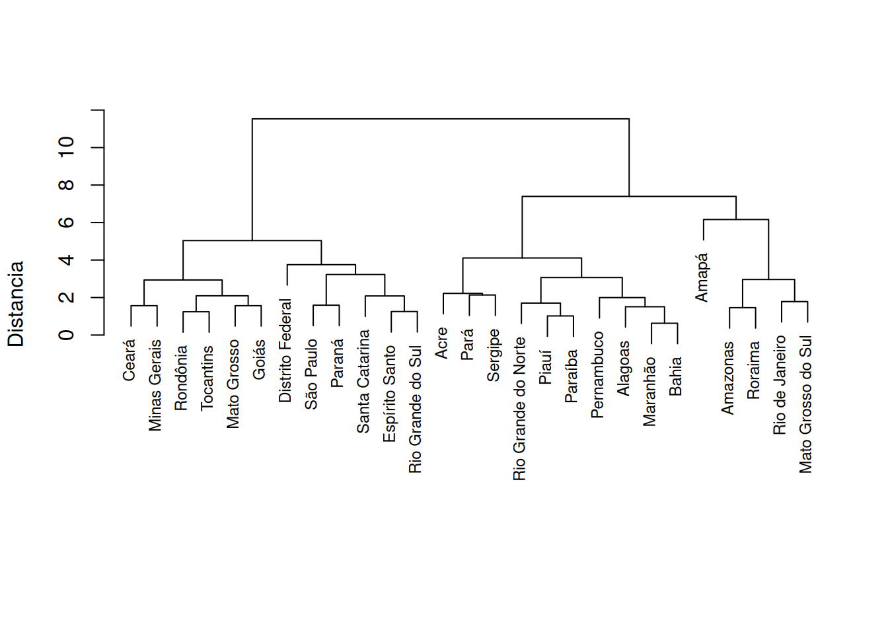
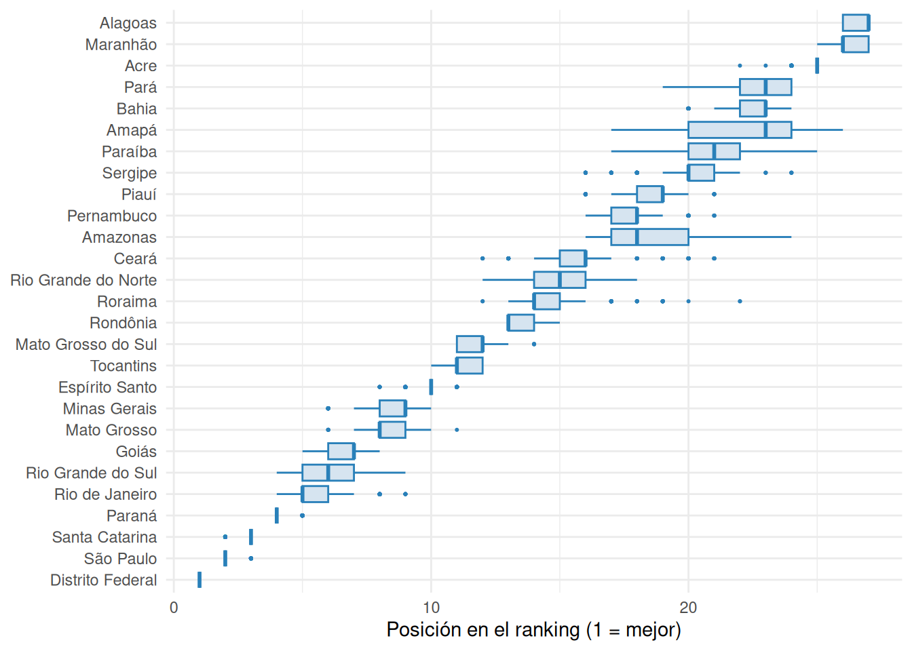
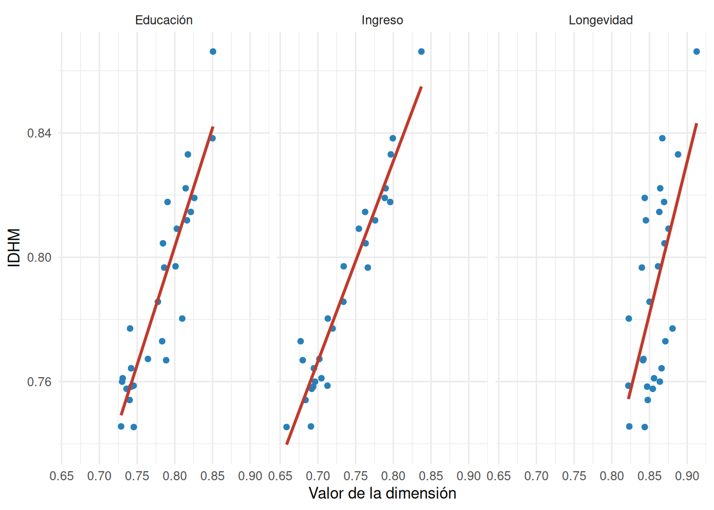
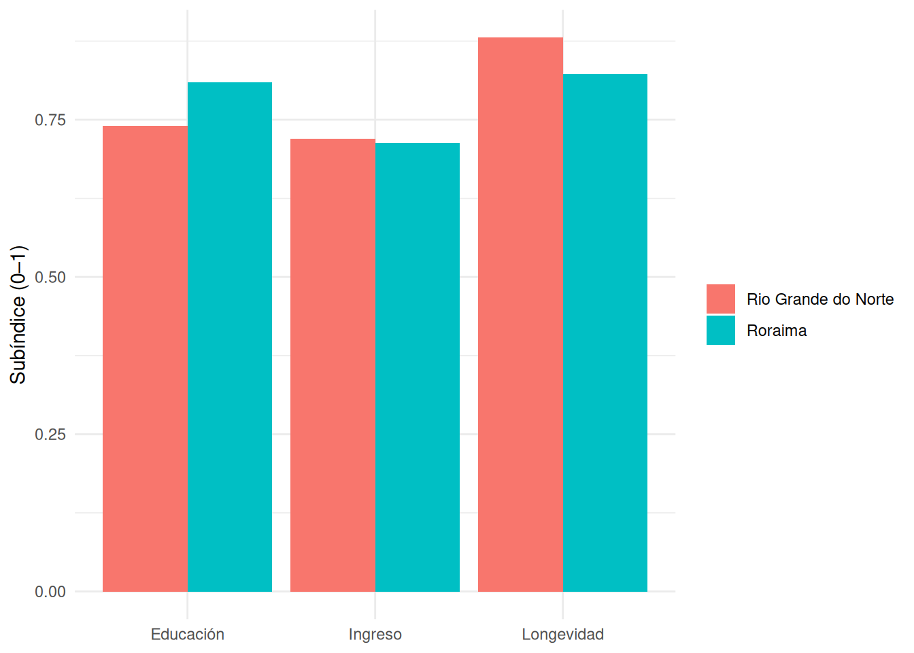
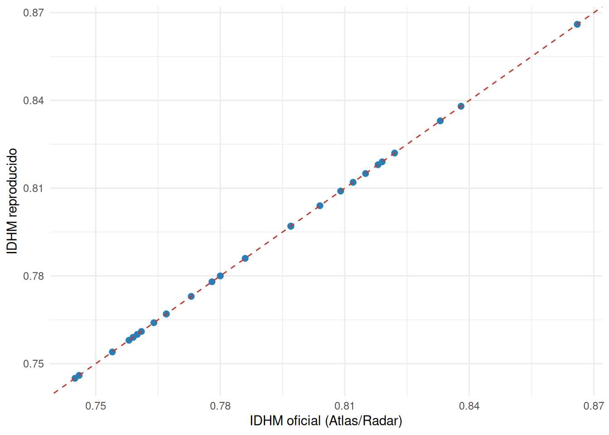
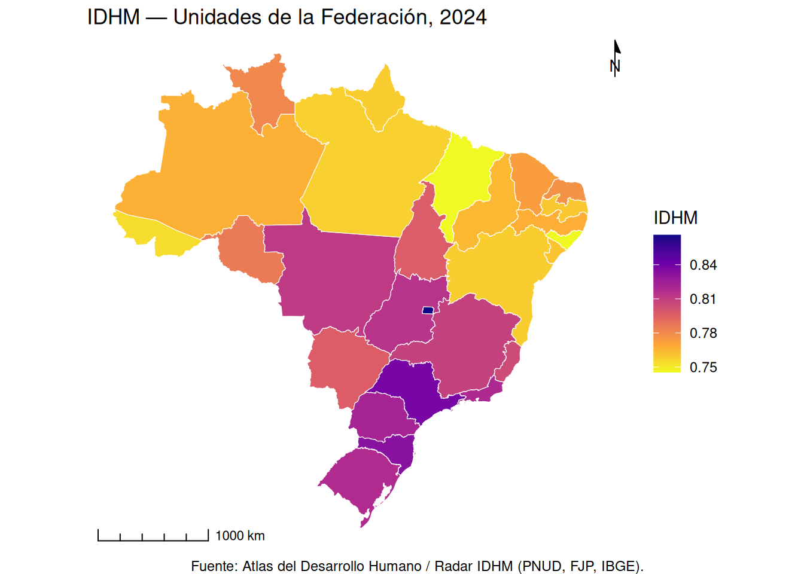
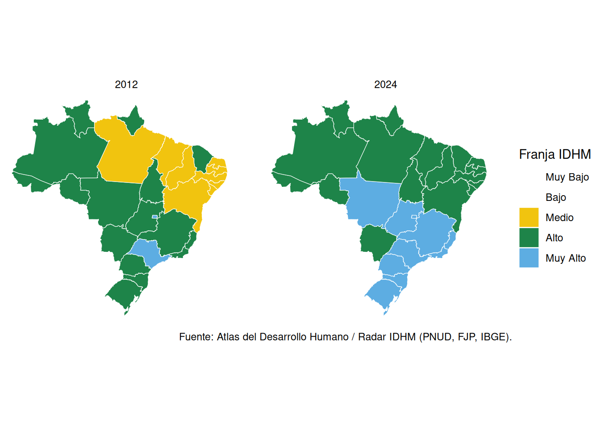

| Etapa | Descripción |
|---|---|
| 1 | Marco teórico y conceptual |
| 2 | Selección de datos |
| 3 | Tratamiento y preparación de los datos |
| 4 | Análisis multivariado |
| 5 | Normalización |
| 6 | Ponderación y agregación |
| 7 | Análisis de incertidumbre y sensibilidad |
| 8 | Vuelta a las dimensiones |
| 9 | Validación externa |
| 10 | Visualización y comunicación |
Tutorial — Construcción de indicadores sintéticos
El IDHM en las 10 etapas de la OCDE · Radar IDHM 2024 · 27 Unidades de la Federación
Caio César Soares Gonçalves ![]()
Objetivos y hoja de ruta
Al final de este taller, usted deberá ser capaz de:
- situar la construcción de un índice compuesto en el flujo de las diez etapas del Handbook de la OCDE (Organización para la Cooperación y el Desarrollo Económicos, 2008);
- distinguir las cuatro decisiones metodológicas que definen cualquier índice — dimensiones, normalización, agregación y ponderación — y reconocer el efecto de cada una sobre el resultado;
- operacionalizar esas decisiones en R, replicando el IDHM y construyendo índices alternativos a partir de la misma base;
- leer críticamente cualquier índice sintético, identificando las decisiones que lo sustentan y la información que suprime.
Los bloques en R son ejecutables y siguen el orden de las etapas, construyendo el índice de forma acumulativa: cada etapa reaprovecha los objetos definidos en las anteriores.
Introducción
Contexto
En 2024, el IDHM (Índice de Desarrollo Humano Municipal) de Brasil alcanzó 0,805, situando al país, por primera vez, en la franja de “muy alto desarrollo humano” — frente a 0,744 en 2012 (PNUD; FJP; IBGE, 2026). El hito, aunque expresivo, suscita una cuestión analítica: ¿en qué medida un valor-síntesis elevado es compatible con desigualdades acentuadas entre subpoblaciones y territorios? No por casualidad, el Radar IDHM 2024 pasó a divulgar también el IDHM ajustado a la desigualdad (IDHMAD), que descuenta de cada dimensión la parte de desarrollo erosionada por la mala distribución — el instrumento que mide, precisamente, lo que el valor agregado calla. La tensión entre la capacidad comunicativa del número agregado y la información que suprime es el hilo conductor de este tutorial.
De la medida elemental al índice compuesto
La información estadística recorre dos movimientos distintos. En un eje de agregación, se parte del dato bruto (el conteo) hacia las estadísticas derivadas — primero los totales, que agregan cantidades absolutas, y sobre ellos las medidas relativas: proporciones, razones, tasas y promedios — y, más adelante, hacia los índices compuestos, que combinan varias medidas en un solo número. En un eje de significación, una estadística derivada se vuelve indicador cuando se le dota de significado social o programático (Jannuzzi, 2014): la tasa de desocupación es una proporción, pero opera como indicador porque dice algo sobre el mercado de trabajo. Los dos ejes se cruzan en el indicador — que puede describir una única dimensión (analítico) o agregar varias en un solo número (sintético).
eje de significación
(gana sentido)
│
DATO BRUTO → ESTADÍSTICA DERIVADA → INDICADOR
(conteo) total → proporción, ├─ analítico: una dimensión
razón, tasa, promedio │ (tasa de desocupación; índice simple)
└──── eje de agregación ───┘└─ sintético: índice compuesto
(agrega dimensiones → IDHM)Conviene distinguir los términos de la medida elemental: una proporción relaciona una parte con el todo del que forma parte (población anciana sobre población total); una razón relaciona magnitudes distintas (densidad demográfica = población/área); una tasa, en sentido estricto, relaciona eventos con una medida de exposición al riesgo — el tiempo vivido bajo riesgo por la población, como en la tasa de mortalidad o de fecundidad —, aunque buena parte de las medidas corrientemente llamadas “tasas” sean, en rigor, proporciones, como la propia tasa de desocupación mencionada arriba; un promedio, aunque sea formalmente una razón (suma sobre conteo), merece nota aparte porque resume una distribución entera en un valor central, al costo de ocultar su dispersión.
Un indicador analítico describe una dimensión específica de la realidad; un índice reexpresa una o más medidas en una escala de referencia — contra una base, un estándar o un intervalo (las referencias que reencontraremos en la normalización, Etapa 5). Cuando combina varios indicadores para representar un fenómeno multidimensional, es un índice compuesto (o sintético), como el IDHM; cuando solo reescala una única medida contra esa referencia, es un índice simple — en el fondo, un indicador analítico puesto en una escala de referencia, como el índice de longevidad del propio IDHM (esperanza de vida puesta en un intervalo de 0 a 1) o un número-índice de precios (valor ÷ base × 100). El índice simple no es, pues, una categoría aparte — no se confunde con el “indicador simple” de la taxonomía usual —, sino el propio indicador analítico ya sometido a ese reescalamiento.
Las cuatro decisiones de todo índice compuesto
Montar un índice compuesto exige cuatro decisiones que no tienen solución única ni neutra (OCDE, 2008): qué dimensiones incluir, cómo normalizar los indicadores (poner escalas distintas en una base comparable), cómo agregarlos (la regla que los funde en un solo número) y qué pesos atribuirles. Rara vez aparecen así, separadas: en el uso corriente, normalización y agregación se disuelven en un vago “cómo combinar”, y el propio Handbook reúne ponderación y agregación en una sola etapa. Pero cada una tiene efecto propio. El paso del IDH — el Índice de Desarrollo Humano, índice global del cual el IDHM es la adaptación brasileña — del promedio aritmético al geométrico, en 2010, no tocó dimensiones ni pesos — solo la regla de agregación — y aun así cambió el comportamiento del índice: al reducir la compensabilidad entre dimensiones — la medida en que un valor alto en una compensa un valor bajo en otra —, pasó a penalizar los perfiles desequilibrados. Es la prueba de que agregar es una palanca independiente de ponderar. Distintas instituciones resuelven esas decisiones de modos distintos: el Índice de Vulnerabilidad Social (IVS, del Ipea — Instituto de Investigación Económica Aplicada), el Índice Minero de Responsabilidad Social (IMRS, de la FJP — Fundación João Pinheiro) y el Ideb — Índice de Desarrollo de la Educación Básica, del Inep (Instituto Nacional de Estudios e Investigaciones Educativas Anísio Teixeira) — parten, cada cual, de una definición propia del concepto que pretenden medir — de la vulnerabilidad a la calidad de la educación básica.
Este taller sigue las diez etapas del Handbook on Constructing Composite Indicators (OCDE, 2008). Conviene no confundir los dos conteos: las diez etapas son un flujo de trabajo, no diez decisiones. Las cuatro decisiones de arriba se concentran en tres etapas — definir dimensiones (1), normalizar (5) y ponderar y agregar (6, que reúne las dos que acabamos de distinguir); las demás preparan los datos (2–4), prueban la incertidumbre y desmontan el índice (7–8), lo validan contra otras medidas (9) y lo comunican (10). En cada etapa, el IDHM entra como caso ancla, pero el objetivo es más amplio: catalogamos las técnicas disponibles en cada decisión, incluso las que el IDHM no adopta, para que usted pueda transportar el método a cualquier concepto que quiera medir.
Etapa 1 · Marco teórico y conceptual
La primera etapa de la construcción de un índice compuesto consiste en definir el concepto a medir y las dimensiones que lo constituyen. Es una etapa teórica — anterior a cualquier manipulación de datos —, pero decisiva: las decisiones tomadas aquí condicionan todas las demás. Es donde el marco conceptual general encuentra su primer objeto concreto: el desarrollo humano.
La escalera de la abstracción: del concepto a la medida
El paso del concepto a la medida recorre una escalera de abstracción — del concepto a las dimensiones y de estas a la definición operacional de los indicadores —, en una estrategia top-down (en oposición a los enfoques data-driven discutidos en la Etapa 4). El recorrido encierra una paradoja: al operacionalizar un concepto, nos acercamos a él lo suficiente para medirlo y, al mismo tiempo, nos alejamos de él, pues toda reducción de un concepto rico a pocos indicadores descarta parte de su contenido. Las premisas incorporadas en esa reducción, sin embargo, no son todas de la misma naturaleza. Las instrumentales — si determinado indicador mide bien la dimensión que pretende representar — son, al menos en parte, empíricamente verificables, y de eso tratarán las etapas de análisis multivariado (4), vuelta a los datos (8) y validación externa (9). En cambio, las normativas — qué cuenta como desarrollo, qué dimensiones lo constituyen — no se deciden por evidencia: es en ellas donde reside el límite epistemológico retomado en la conclusión.
El concepto de desarrollo humano — y dos contrapuntos
En la formulación de Mahbub ul Haq, apoyada en el enfoque de las capacidades de Amartya Sen, el desarrollo humano se define como la ampliación de las libertades y capacidades de las personas, en contraposición a la identificación del desarrollo con el mero crecimiento del ingreso (PNUD, 1990; Sen, 2000). El ingreso no se abandona — entra como una de las tres dimensiones —, pero se rebaja de fin a medio. Operacionalizada, la concepción se reduce a longevidad, educación e ingreso, dejando deliberadamente fuera la desigualdad, la libertad política y la sostenibilidad ambiental — y es la primera de esas ausencias la que reabre la tensión anunciada en la introducción: un valor-síntesis alto nada dice sobre cómo se reparte el desarrollo. Que esas ausencias sean reconocidas se evidencia en el propio hecho de que el PNUD las haya, en parte, abordado más tarde mediante índices complementarios — el IDH ajustado a la desigualdad (IDHMAD, en el caso brasileño) para la primera; el IDH ajustado a las presiones planetarias para la tercera —, señal de que las decisiones de la Etapa 1 no son definitivas, sino convenciones abiertas a revisión.
Ese mismo paso — fijar un concepto y derivar dimensiones de él — es dado de modos distintos por otros índices, y el contraste ilumina cuánto la Etapa 1 condiciona todo lo que sigue:
¿Qué marco teórico define el concepto? (IVS, Ipea). El Índice de Vulnerabilidad Social parte de una definición propia: la vulnerabilidad es la ausencia o insuficiencia de activos — materiales e inmateriales — que deberían estar al alcance de todos los ciudadanos. No es el reverso del IDHM, sino un enfoque distinto, de la tradición de los activos y la vulnerabilidad: el foco no está en la realización de capacidades, sino en la carencia de los recursos que permitirían a una familia resistir choques. De ahí que sus tres dimensiones sean clases de activos — infraestructura urbana, capital humano, ingreso y trabajo — y de ahí, también, la regla invertida: como cada indicador mide una carencia, valores cercanos a 1 apuntan a la peor situación, al contrario del IDHM. El Ipea además demarca que la vulnerabilidad no se reduce a la pobreza monetaria, lo que explica que el ingreso sea solo una de las tres dimensiones. La elección del marco conceptual — y no solo de las dimensiones — es la decisión de Etapa 1 que aquí condiciona todo, incluso el sentido de la escala.
¿Quién traduce el mandato en medida? (IMRS, FJP). En el Índice Minero de Responsabilidad Social la autoridad del concepto viene de la ley — creado por la Ley estadual 14.172/2002 y perfeccionado por la Ley 15.011/2004, que define la responsabilidad social como el deber de la administración de asegurar el acceso a salud, educación, seguridad, asistencia, saneamiento, transporte, vivienda, entre otros, y delega en la FJP su medición. Pero la ley entrega un mandato, no un índice: traducirlo exigió arbitrar temas, indicadores, pesos y estándares de referencia. Y esa traducción no es neutra ni fiel al texto legal — varias áreas previstas en la ley (transporte, vivienda, alimentación, ocio) quedaron fuera por ausencia de dato municipal confiable y comparable, restricción que el asiento en registros administrativos vuelve aún más aguda. En la 10.ª edición (IMRS 2024, calculado sobre el trienio 2022–2024), restaron cinco dimensiones operacionales — educación y salud, las de mayor peso (23% cada una), seguidas de seguridad pública, vulnerabilidad social y saneamiento y medio ambiente (18% cada una). El concepto efectivamente medido es, por tanto, la intersección entre lo que la ley mandó y lo que los registros administrativos permiten ver — y, dentro de cada dimensión, la FJP aún organiza los indicadores en tres facetas que la ley no pedía: la situación, el esfuerzo de la política pública y las características de la gestión municipal. La decisión de Etapa 1, aquí, no está en elegir el concepto (la ley lo fijó), sino en operacionalizarlo bajo restricción de datos — y es la restricción, tanto como el mandato, la que dibuja el índice.
Etapa 2 · Selección de datos
Definidas las dimensiones, la etapa de selección identifica, para cada una, el indicador observable que mejor la representa, a la luz de un conjunto de criterios y de las propiedades deseables de un buen indicador. El indicador teóricamente ideal no siempre está disponible, y esa limitación debe explicitarse.
Criterios de selección (y propiedades de un buen indicador):
- Relevancia y validez — el indicador se adhiere a la dimensión y mide lo que pretende medir (validez de constructo).
- Cobertura — alcanza todas las unidades de interés (aquí, las 27 Unidades de la Federación) sin lagunas sistemáticas.
- Comparabilidad en el tiempo y en el espacio — misma definición, fuente y referencia entre períodos y territorios.
- Periodicidad y oportunidad — actualización regular y próxima al período de análisis.
- Confiabilidad y tipo de fuente — censo, encuesta por muestreo o registro administrativo, cada uno con sus propios trade-offs.
- Sensibilidad y especificidad — capta la variación real del fenómeno sin reaccionar a ruido ajeno.
- Mensurabilidad y parsimonia — prefiera el indicador disponible y no redundante (Etapa 4); use proxies cuando falte el ideal, y documente.
- Polaridad — defina la dirección (mayor = mejor o peor), decisión que reaparece en la normalización (Etapa 5).
# c() crea un vector con los nombres de los paquetes que vamos a usar:
# readxl (leer Excel), dplyr/tidyr (manipular tablas), ggplot2 (gráficos), sf (mapas),
# ggspatial (escala y rosa de los vientos en los mapas, Etapa 10)
pacotes <- c("readxl", "dplyr", "tidyr", "ggplot2", "sf", "ggspatial")
# setdiff() devuelve los paquetes de la lista que aún NO están instalados...
faltando <- setdiff(pacotes, rownames(installed.packages()))
# ...y, si hay alguno faltando, lo instala automáticamente
if (length(faltando) > 0) install.packages(faltando)
# carga (library) cada paquete de la lista; invisible() solo suprime la salida en la consola
invisible(lapply(pacotes, library, character.only = TRUE))# read_excel() lee la planilla; sheet = "Total" elige la pestaña. El resultado se guarda
# (con la flecha <-, el operador de asignación de R) en el objeto 'radar': una tabla (data frame)
# con el panel 2012–2024 y varios recortes geográficos
radar <- read_excel("data/adh_radar_base_2012_2024.xlsx", sheet = "Total")
# filter() mantiene solo las filas que satisfacen las condiciones (año = 2024 Y recorte = UF);
# '==' prueba igualdad (note los dos signos de igual). Quedan las 27 UF de 2024
ufs <- filter(radar, ANO == 2024, AGREGACAO == "Unidade da Federação")
# vector con los códigos de las 4 columnas de FLUJO escolar, que reutilizaremos más adelante
cols_fluxo <- c("T_FREQ5A6", "T_FUND11A13", "T_FUND15A17", "T_MED18A20")
# glimpse() muestra un resumen de las columnas elegidas. Dentro de ufs[, c(...)], la coma
# separa [filas, columnas]: dejando vacío el lado de las filas, pedimos TODAS las filas y solo
# las columnas listadas
glimpse(ufs[, c("NOME", "ESPVIDA", "T_FUND18M", cols_fluxo, "RDPC", "IDHM")])Rows: 27
Columns: 9
$ NOME <chr> "Rondônia", "Acre", "Amazonas", "Roraima", "Pará", "Amapá"…
$ ESPVIDA <dbl> 76.00, 75.86, 75.48, 74.35, 76.26, 74.32, 76.68, 75.62, 76…
$ T_FUND18M <dbl> 64.82, 67.18, 74.51, 79.75, 66.73, 75.35, 69.81, 63.05, 59…
$ T_FREQ5A6 <dbl> 95.64, 93.06, 94.99, 95.84, 98.41, 83.01, 96.06, 98.48, 99…
$ T_FUND11A13 <dbl> 97.15, 91.52, 92.80, 92.26, 92.34, 92.32, 98.67, 95.05, 96…
$ T_FUND15A17 <dbl> 82.29, 74.26, 73.77, 72.35, 67.65, 68.18, 80.65, 72.75, 76…
$ T_MED18A20 <dbl> 65.58, 51.88, 62.91, 65.98, 50.79, 53.05, 67.79, 58.03, 57…
$ RDPC <dbl> 769.89, 563.00, 550.19, 676.77, 592.77, 674.74, 771.42, 48…
$ IDHM <dbl> 0.786, 0.754, 0.767, 0.780, 0.758, 0.759, 0.797, 0.745, 0.…Fuente: base pública del Atlas del Desarrollo Humano / Radar IDHM, elaborada por el PNUD (Programa de las Naciones Unidas para el Desarrollo) en alianza con la FJP y el IBGE (Instituto Brasileño de Geografía y Estadística). Para el panel 2012–2024, la base reúne fuentes distintas según la dimensión: la PNAD Continua Anual (Encuesta Nacional por Muestra de Domicilios, IBGE) para ingreso y educación; y las Proyecciones de la Población y las tablas abreviadas de mortalidad del IBGE para la longevidad — complementadas, en las regiones metropolitanas, por el Sistema de Información sobre Mortalidad (SIM/Datasus) y por estadísticas vitales. Se utiliza aquí el recorte de las 27 Unidades de la Federación en el año 2024; la base completa, distribuida a los participantes, contiene los demás años, los recortes por sexo y color y decenas de indicadores adicionales.
La propia lista de fuentes de arriba ilustra un punto de la selección: el indicador está condicionado por el diseño de la fuente. Los censos son exhaustivos, pero decenales; las encuestas por muestreo como la PNAD Continua son periódicas, pero sujetas a error muestral y limitadas en la desagregación geográfica — sostienen estimaciones para Brasil, las Unidades de la Federación y las regiones metropolitanas, no para el conjunto de los municipios; las proyecciones poblacionales y los registros vitales (como el SIM) son anuales, pero de cobertura y calidad desiguales entre territorios. Por eso el Radar actualiza el IDHM solo para Brasil, las UF y las RM en los años intercensales, mientras que el IDHM municipal permanece atado al Censo Demográfico — y por eso, también, adoptamos aquí el recorte de las UF.
Longevidad
La dimensión se operacionaliza por la esperanza de vida al nacer (\(e_0\)), que sintetiza en una única medida el nivel y el patrón etario de la mortalidad de un período. Derivada de la tabla de vida e incorporando la mortalidad por todas las causas, constituye un indicador robusto de las condiciones generales de salud y supervivencia de la población. Por provenir de la tabla de vida, \(e_0\) es independiente de la estructura etaria observada — lo que la vuelve comparable entre UF de composiciones etarias distintas, ventaja que la tasa bruta de mortalidad no posee. Nótese que el indicador elegido para representar la dimensión es, él mismo, una medida-síntesis sofisticada, y no un dato bruto.
Ingreso
Se adopta el ingreso domiciliario per cápita, y no el Ingreso Nacional Bruto per cápita de la metodología global del IDH: la medida domiciliaria se aproxima más al estándar de vida efectivo de la población residente que el agregado macroeconómico. Por tratarse de un panel 2012–2024, el ingreso se expresa en reales constantes, aislando la variación real del poder de compra de la variación de precios — condición de la comparabilidad temporal exigida en el criterio de selección.
Educación
La dimensión combina dos componentes de naturalezas distintas: un stock — la escolaridad de la población adulta — y un flujo — la asistencia y la progresión escolar de la población joven en la edad adecuada, sensible a la distorsión edad-grado. La adaptación brasileña emplea más indicadores educativos que la metodología global. Operacionalmente, el stock corresponde al porcentaje de personas de 18 años o más con educación primaria completa; el flujo, al promedio de cuatro indicadores de asistencia y conclusión escolar, referentes a las franjas de 5–6, 11–13, 15–17 y 18–20 años — dos componentes que solo se combinarán en la etapa de ponderación y agregación (Etapa 6).
Etapa 3 · Tratamiento y preparación de los datos
En rigor, este paso es más amplio de lo que sugiere la etiqueta del Handbook (“imputación de datos ausentes”): es el momento en que los datos brutos se vuelven aptos para el análisis. La imputación es solo uno de sus frentes; junto a ella vienen la crítica de consistencia, la detección de outliers y el suavizado de series — y es también aquí que se fijan los parámetros que la normalización usará (los límites de referencia y la polaridad de cada indicador). Toda decisión tomada en este paso condiciona los resultados y debe documentarse.
La secuencia es un flujo, no un guion
Las diez etapas del Handbook son una secuencia “ideal”; los índices reales las adaptan. El IMRS, por ejemplo, las condensa en siete bloques: funde el análisis multivariado en la propia selección (excluyendo indicadores redundantes ya en la elección) y amplía este paso a un bloque de “tratamiento, preparación e imputación de datos”, que reúne crítica, outliers, ausentes y suavizado. Mantenemos las etapas separadas por claridad didáctica, conscientes de que, en la práctica, frecuentemente se funden.
Se comienza por inspeccionar la base — recordando que no toda ausencia aparece como NA: valores centinela (0, -1, 99, “ignorado”) pueden enmascarar datos faltantes y deben rastrearse antes de cualquier conteo.
# dim() devuelve las dimensiones de la tabla: número de filas (UF) y de columnas (variables)
dim(ufs)[1] 27 83# lo que importa aquí son los indicadores que ALIMENTAN el índice — no las decenas de columnas
# de la base. Reunimos los 8 en un vector: longevidad, escolaridad, los 4 de flujo, ingreso y el
# IDHM oficial (este último para la reproducción en la Etapa 9)
cols_calc <- c("ESPVIDA", "T_FUND18M", cols_fluxo, "RDPC", "IDHM")
# is.na() marca como TRUE cada celda vacía; colSums() suma esos TRUE columna a columna
# (en R, TRUE cuenta como 1 y FALSE como 0), dando el nº de ausencias por variable.
# ufs[, cols_calc] restringe la verificación a esas 8 columnas
na_por_coluna <- colSums(is.na(ufs[, cols_calc]))
# filtra el resultado para mostrar solo las columnas (entre las del cálculo) con alguna ausencia
na_por_coluna[na_por_coluna > 0]named numeric(0)La base tiene 27 filas (las UF) y 83 columnas, y el filtro no devuelve ninguna de las 8 columnas del cálculo: el Radar ya viene consolidado, sin datos faltantes a imputar en este recorte. La ausencia de ausencias dispensa la imputación, pero no la etapa — la decisión de tratamiento sigue valiendo, como el caso del IMRS más adelante deja claro.
Las técnicas existentes se organizan por los frentes del paso, cada una ilustrada, cuando cabe, sobre los propios indicadores del cálculo.
Crítica y consistencia — reglas estructuradas que confrontan cada valor con la trayectoria histórica y con límites plausibles, señalando saltos abruptos y valores incompatibles. A título de ejemplo, cuatro reglas de plausibilidad sobre los indicadores del cálculo — en R base, sin paquetes adicionales:
# cada regla es un vector lógico (TRUE donde la UF satisface la condición, FALSE donde falla).
# el & combina condiciones (Y lógico); >= y <= prueban los límites
regras <- list(
renda_positiva = ufs$RDPC > 0, # ingreso > 0: exigencia del log (Etapa 5)
espvida_plausivel = ufs$ESPVIDA >= 50 & ufs$ESPVIDA <= 90, # esperanza de vida en franja plausible
escol_percentual = ufs$T_FUND18M >= 0 & ufs$T_FUND18M <= 100, # escolaridad (%) dentro de [0,100]
# apply(..., 1, all) verifica, fila a fila (margen 1 = UF), si TODOS los 4 indicadores
# de flujo caen en [0,100]; all() exige que la condición valga para los cuatro a la vez
fluxo_percentual = apply(ufs[, cols_fluxo] >= 0 & ufs[, cols_fluxo] <= 100, 1, all)
)
# sapply recorre las reglas y cuenta, en cada una, cuántas UF FALLAN: !ok invierte el lógico
# (TRUE pasa a FALSE y viceversa) y sum() suma los TRUE. Cero en todas = base consistente
sapply(regras, function(ok) sum(!ok)) renda_positiva espvida_plausivel escol_percentual fluxo_percentual
0 0 0 0 Las 27 UF pasan todas las reglas (cero fallas), lo que confirma la consistencia de la base ya consolidada. El valor del método, sin embargo, aparece en datos brutos: la misma estructura de reglas señala automáticamente el porcentaje por encima de 100, el ingreso nulo que inviabilizaría el log o el salto inverosímil entre años — volviendo la crítica de datos reproducible y auditable, en vez de una inspección manual caso por caso. Para conjuntos mayores, paquetes como validate y pointblank formalizan exactamente esa lógica como objetos auditables — separando la declaración de las reglas de su verificación y generando informes —, pero el principio es el de estas pocas líneas.
Outliers — detección por amplitud intercuartílica (boxplot/IQR), z-score o percentiles; tratamiento por recorte (eliminación de los extremos) o winsorización (sustitución de los extremos por el valor del percentil de corte — p.ej. los percentiles 2,5 y 97,5), además de transformación (log) o imputación. Importa en especial porque, bajo min–max, un único outlier define el máximo o el mínimo y comprime todo el resto de la escala (Etapa 5). La regla clásica del boxplot considera atípico el valor fuera de la “cerca” \([\,Q_1 - 1{,}5 \cdot \text{IQR},\; Q_3 + 1{,}5 \cdot \text{IQR}\,]\), donde IQR (amplitud intercuartílica) es \(Q_3 - Q_1\):
# función que devuelve TRUE para los valores fuera de la cerca del boxplot
eh_outlier <- function(x) {
q <- quantile(x, c(.25, .75)) # 1er y 3er cuartiles (Q1 y Q3)
iqr <- q[2] - q[1] # amplitud intercuartílica
x < q[1] - 1.5 * iqr | x > q[2] + 1.5 * iqr
}
# aplica la regla a cada indicador del cálculo y cuenta cuántas UF caen fuera de la cerca
indic <- data.frame(longevidade = ufs$ESPVIDA,
escolaridade = ufs$T_FUND18M,
fluxo = rowMeans(ufs[, cols_fluxo]),
renda = ufs$RDPC)
sapply(indic, function(x) sum(eh_outlier(x))) longevidade escolaridade fluxo renda
1 0 0 0 # ¿cuál UF es el único caso atípico (en longevidad)?
ufs$NOME[eh_outlier(ufs$ESPVIDA)][1] "Distrito Federal"Solo la longevidad acusa un caso fuera de la cerca — el Distrito Federal (79,8 años, contra una mediana de 76,4). Es la ilustración exacta de la alerta de este tópico: bajo min–max muestral, esa única UF definiría el techo de la escala de longevidad y comprimiría a todas las demás. El IDHM escapa de eso al adoptar balizas fijas (25 a 85 años, Etapa 5), inmunes a un extremo de la muestra. Nótese además que ser extremo no es ser outlier: el DF, récord de ingreso (más del doble de la mediana), ni siquiera es señalado como atípico en el ingreso por esta regla.
Los dos frentes restantes no rinden ilustración en esta base — no hay ausencias a imputar ni ruido municipal a suavizar —, pero completan el repertorio del paso.
Datos ausentes — antes de rellenar, pregunte por qué falta el dato, pues de ello depende el método válido (Rubin, 1976). En la tipología de Rubin (1976), la ausencia puede ser: completamente aleatoria (MCAR, missing completely at random) — no tiene relación con nada, y entonces simplemente excluir las filas incompletas no sesga el resultado, solo reduce la muestra; aleatoria condicional (MAR, missing at random) a algo que se observa — p.ej. faltan más respuestas en UF de menor población, característica que está en la base, y ahí una imputación por modelo es válida; o no aleatoria (MNAR, missing not at random) — cuando el propio valor que falta explica la ausencia, como el municipio que no reporta justamente por estar en mala situación, el caso más difícil y sin corrección estándar. Las técnicas van de la exclusión de las filas incompletas (válida solo en el primer caso) a la imputación simple por promedio/mediana (rellena, pero subestima la varianza y atenúa correlaciones, distorsionando la Etapa 4), a la imputación por regresión o por vecinos semejantes (hot-deck/kNN, paquete VIM), a la imputación múltiple — que rellena varias veces para propagar la incertidumbre (mice) — y a modelos de serie temporal (filtro de Kalman, imputeTS).
Suavizado — promedios móviles (p.ej. trienales, que sustituyen el valor de cada año por el promedio de él con los dos años vecinos) reducen las oscilaciones de corto plazo y el ruido de eventos raros en poblaciones pequeñas (una única muerte infantil distorsiona una tasa municipal), al costo de que el indicador reaccione con retraso a los cambios reales.
En el Radar IDHM, la base aquí utilizada ya está consolidada y no presenta ausencias en los indicadores seleccionados. La decisión de preparación, sin embargo, no desaparece por omisión. El IMRS es el caso completo: asentado en registros administrativos de los 853 municipios mineros, aplica reglas de crítica, detecta outliers en series temporales, imputa lagunas por modelo estructural vía filtro de Kalman (imputeTS) y suaviza por promedios trienales — antes de fijar, para cada indicador, los límites de referencia y la polaridad que alimentarán la normalización.
Etapa 4 · Análisis multivariado
Antes de combinar los indicadores, se examina la estructura de los datos en dos ejes: entre indicadores (¿hay redundancia? ¿la estructura empírica respalda la agrupación teórica?) y entre unidades (¿qué perfiles de UF se forman?). La motivación es concreta: indicadores fuertemente correlacionados capturan información redundante, y atribuirles pesos iguales sobrepondera, en la práctica, la dimensión que comparten — el llamado doble conteo. La alerta tiene, sin embargo, una contra-alerta: cierta correlación entre medidas de un mismo agregado es esperada y no constituye, por sí sola, redundancia. Quien decide si dos medidas correlacionadas son “la misma cosa” es la teoría (Etapa 1), no el coeficiente.
Las técnicas se organizan por esos dos ejes.
Matriz de correlación (Pearson/Spearman) — mapea la redundancia entre los indicadores, con la función base cor() (el paquete corrplot ayuda a visualizarla como mapa de calor):
# El análisis multivariado examina los indicadores SEPARADOS — incluso los 4 de flujo, que solo
# se combinarán en la Etapa 6. Tomar el promedio del flujo ya aquí escondería la redundancia entre ellos.
# El operador |> ("pipe") pasa ufs como 1er argumento de transmute(), que monta una tabla en la que
# cada columna es un indicador bruto (a la izquierda del '=', el nombre; a la derecha, la columna de la base):
indicadores <- ufs |>
transmute(
longevidade = ESPVIDA,
escolaridade = T_FUND18M,
fluxo_5a6 = T_FREQ5A6,
fluxo_11a13 = T_FUND11A13,
fluxo_15a17 = T_FUND15A17,
fluxo_18a20 = T_MED18A20,
renda = RDPC
)
# cor() calcula la matriz de correlación entre las columnas; round(..., 2) redondea a 2 decimales.
# use = "complete.obs" manda ignorar eventuales ausencias en el cálculo
round(cor(indicadores, use = "complete.obs"), 2) longevidade escolaridade fluxo_5a6 fluxo_11a13 fluxo_15a17
longevidade 1.00 0.14 0.40 0.57 0.44
escolaridade 0.14 1.00 -0.31 0.12 0.19
fluxo_5a6 0.40 -0.31 1.00 0.28 0.30
fluxo_11a13 0.57 0.12 0.28 1.00 0.69
fluxo_15a17 0.44 0.19 0.30 0.69 1.00
fluxo_18a20 0.32 0.59 0.21 0.62 0.74
renda 0.56 0.72 0.09 0.47 0.47
fluxo_18a20 renda
longevidade 0.32 0.56
escolaridade 0.59 0.72
fluxo_5a6 0.21 0.09
fluxo_11a13 0.62 0.47
fluxo_15a17 0.74 0.47
fluxo_18a20 1.00 0.64
renda 0.64 1.00La lectura de la matriz contraría la expectativa ingenua y, por eso mismo, instruye. Primero, los indicadores de flujo de la primaria y la secundaria (11–13, 15–17 y 18–20 años) se correlacionan fuerte entre sí (del orden de 0,6 a 0,7): es esa redundancia la que respalda combinarlos en una única medida de flujo (Etapa 6). El flujo de 5–6 años desentona — casi universalizado, varía poco entre las UF y por eso se desacopla de los demás (correlaciones bajas): un indicador saturado carga poca información para diferenciar unidades. Segundo, la escolaridad (el stock de adultos con primaria completa) tiene correlación apenas modesta con el flujo — excepto con el de 18–20 años, más próximo a la conclusión de la educación básica: stock y flujo miden facetas distintas, el legado educativo y la dinámica escolar contemporánea, y no se reducen uno al otro. Tercero, y es la alerta central, la correlación más fuerte entre dimensiones distintas es ingreso × escolaridad (0,72): el caso clásico de doble conteo al ponderarlas igualmente. Vale la contra-alerta de la apertura — es la teoría, no el coeficiente, la que decide si ingreso y escolaridad son “la misma cosa” —, pero la magnitud recomienda cautela.
Alfa de Cronbach — mide la consistencia interna dentro de una dimensión (no tiene sentido en el conjunto multidimensional). La fórmula es simple y la calculamos directo abajo, pero el paquete psych (función alpha()) la entrega lista. Para los cinco indicadores de educación:
# alfa de Cronbach: k/(k-1) * (1 - suma de las varianzas de los ítems / varianza de la suma de los ítems)
alpha <- function(itens) {
k <- ncol(itens)
(k / (k - 1)) * (1 - sum(apply(itens, 2, var)) / var(rowSums(itens)))
}
# dimensión educación (stock + 4 flujo, todos en %), con y sin el flujo saturado de 5–6 años
c(com_5a6 = alpha(ufs[, c("T_FUND18M", cols_fluxo)]),
sem_5a6 = alpha(ufs[, c("T_FUND18M", "T_FUND11A13", "T_FUND15A17", "T_MED18A20")])) |> round(3)com_5a6 sem_5a6
0.690 0.744 El α de 0,69 sube a 0,74 al remover el flujo de 5–6 años — el mismo ítem saturado que la matriz ya había apuntado. Es la lectura correcta de la métrica: el alfa no es un “cuanto más alto, mejor”, sino un diagnóstico de cohesión; aquí, confirma que los indicadores de educación miden algo común y que el ítem casi invariante poco agrega.
Componentes principales (ACP; en inglés, principal component analysis, PCA) y análisis factorial — identifican la estructura latente y pueden generar pesos a partir de los datos (bottom-up); pesos que reflejan varianza y correlación, no importancia normativa (y presuponen pruebas de adecuación, como el KMO — Kaiser–Meyer–Olkin — y la esfericidad de Bartlett). En R, prcomp() (base) hace la ACP, factanal() (base) el análisis factorial, y los paquetes FactoMineR y factoextra amplían ambos:
# prcomp() hace la ACP; scale.=TRUE estandariza los indicadores antes (si no, el ingreso, de mayor escala,
# dominaría). Reaprovecha el objeto 'indicadores' (las 7 columnas de la matriz de correlación)
pca <- prcomp(indicadores, scale. = TRUE)
round(summary(pca)$importance[2, 1:3], 3) # proporción de la varianza resumida por PC1, PC2, PC3 PC1 PC2 PC3
0.508 0.228 0.110 round(pca$rotation[, 1], 2) # cargas (pesos) de los indicadores en el 1er componente longevidade escolaridade fluxo_5a6 fluxo_11a13 fluxo_15a17 fluxo_18a20
0.36 0.28 0.17 0.42 0.43 0.46
renda
0.44 El primer componente por sí solo resume la mitad de la varianza (≈ 0,51) y carga casi todos los indicadores en el mismo sentido — un eje general de desarrollo que podría servir de índice data-driven. Las cargas son parecidas entre sí (0,3 a 0,5), salvo la del flujo de 5–6 años (0,17), de nuevo el ítem que menos diferencia. Pero vale la salvedad: esos pesos maximizan la varianza estadística, no traducen un juicio sobre lo que importa en el desarrollo humano — razón por la cual el IDHM no los adopta.
Análisis de agrupamiento (cluster) — cambia de eje: en vez de comparar indicadores, agrupa unidades por similitud de perfil, revelando tipos de UF. Aquí vía hclust() (base); los paquetes cluster y factoextra traen diagnósticos (como el número óptimo de grupos) y gráficos.
# scale() estandariza; dist() calcula las distancias entre las UF; hclust() las agrupa de forma
# jerárquica. En el dendrograma, cuanto más baja la unión, más parecidas son las UF
d <- dist(scale(indicadores))
hc <- hclust(d, method = "ward.D2")
plot(hc, labels = ufs$NOME, main = NULL, xlab = "", ylab = "Distancia", sub = "", cex = 0.75)
El dendrograma separa, en líneas generales, las UF del Sur/Sudeste/Centro-Oeste de las del Norte/Nordeste, con algunos casos aparte (Amapá, p.ej., se destaca temprano). Es la lectura “entre unidades” anunciada en la apertura: dos UF con IDHM parecido pueden caer en ramas distintas por tener perfiles dimensionales diferentes — exactamente lo que la Etapa 8 explorará al desmontar el índice.
Estandarizar para analizar ≠ normalizar el índice. La ACP y el cluster exigen estandarizar los indicadores antes (el
scale. = TRUEy elscale()de los bloques de arriba), si no el ingreso — de escala numérica mucho mayor — dominaría varianzas y distancias. Esa estandarización es instrumental: un z-score interno a la técnica, solo para que el análisis vea la estructura. No se confunde con la normalización de la Etapa 5, que es una decisión sustantiva del índice (balizas fijas, polaridad) — y por eso la estandarización aquí no invierte el orden del flujo. La matriz de correlación, a su vez, dispensa ese paso (ya es invariante a escala), así como el alfa, calculado sobre indicadores en la misma unidad (%).
Vale una salvedad de escala: con siete indicadores y 27 unidades, la ACP y el análisis factorial son aquí sobre todo ilustrativos — exigen más variables y más casos para ser informativos. En el IDHM esto es secundario, pues la estructura es teórica; lo que se retiene es el método, transponible a índices con decenas de indicadores.
En el IDHM, la estructura se define teóricamente (top-down), no se deriva de los datos; aun así, estas técnicas permiten verificar la redundancia entre indicadores — y, en otros índices, estimar los propios pesos. En el IMRS, por cierto, ese análisis no es un paso aislado: la exclusión de indicadores redundantes ocurre ya en la selección (Etapa 2), la adaptación que la Etapa 3 anticipó. En la base de las UF, ingreso y escolaridad tienden a exhibir correlación elevada, lo que recomienda cautela al tratarlos como dimensiones independientes de igual peso.
Etapa 5 · Normalización
Los indicadores tienen unidades distintas (años, %, R$). Es preciso ponerlos en una escala común.
La normalización encierra una decisión poco visible pero consecuente: ¿el “0” y el “1” de la escala deben corresponder a referencias fijas (balizas, o goalposts), externas a la muestra, o a los mínimos y máximos observados en cada año? El IDHM adopta balizas fijas — es lo que vuelve el valor de 2024 comparable al de 2012. Con referencia muestral, la comparación se pierde en dos sentidos: en el tiempo, la mejor UF recibe 1 por definición en todo año; y en el espacio, basta incluir o excluir una UF para alterar el puntaje de todas las demás, pues el mín/máx puede cambiar.
\[\text{min-max:}\quad I = \frac{x - x_{\min}}{x_{\max} - x_{\min}} \qquad\quad \text{z-score:}\quad z = \frac{x - \bar{x}}{s}\]
La polaridad entra aquí. Generalizando el min–max, se sustituyen mín/máx por balizas de peor y mejor desempeño: \(I = \dfrac{x - x_{\text{peor}}}{x_{\text{mejor}} - x_{\text{peor}}}\). Cuando el peor valor es el mayor (indicadores de carencia — distorsión edad-grado, mortalidad), la misma fórmula invierte la escala. Es así como el IMRS trata sus indicadores de polaridad negativa, atribuyendo a cada cual un límite “peor” y uno “mejor” — y es el camino opuesto al del IVS, que deliberadamente mantiene mayor = peor como el propio sentido del índice.
Técnicas existentes — las dos primeras (min-max y z-score) se aplican en el ejemplo de abajo; las demás siguen la misma lógica de reescala:
- Min-max (balizas fijas o muestrales) — reescala al intervalo [0,1]; cálculo directo o
scales::rescale(). - Z-score — centra en el promedio y divide por la desviación estándar (varianza 1); función base
scale(). - Ranqueo (ordinal) — robusto a outliers, pero descarta la magnitud; función base
rank(). - Distancia a metas/referencia — razón entre el valor y una meta externa, para índices orientados a metas (p.ej. los ODS — Objetivos de Desarrollo Sostenible).
- Distancia al promedio del grupo — posición por encima/debajo del promedio (un z-score sin dividir por la desviación).
- Categorización por percentiles — agrupa en clases ordenadas;
dplyr::ntile()ocut()sobrequantile(). - Indexación a un año-base (número-índice) — valor ÷ base × 100.
- Transformaciones previas — el log es un caso de la familia Box-Cox (
MASS::boxcox(),bestNormalize); antes de transformar, mire la distribución (histograma, outliers) y cuidado: no hay log de cero.
Comparando tres normalizaciones de la longevidad (min-max fijo, min-max muestral y z-score):
# el signo de dólar ($) accede a una columna de la tabla por el nombre: ufs$ESPVIDA es el vector de esperanzas de vida
ev <- ufs$ESPVIDA
# las tres cuentas de abajo operan sobre el vector entero de una vez (R es "vectorizado":
# no hace falta bucle/loop para aplicar la fórmula a cada UF)
fixo <- (ev - 25) / (85 - 25) # min-max con referencia fija (balizas del IDHM)
amostral <- (ev - min(ev)) / (max(ev) - min(ev)) # min-max con el mín/máx observados en la muestra
zscore <- (ev - mean(ev)) / sd(ev) # estandarización z-score (mean = promedio, sd = desviación estándar)
# data.frame() junta los tres vectores en columnas; summary() resume cada una (mín, promedio, máx...)
summary(data.frame(fixo, amostral, zscore)) fixo amostral zscore
Min. :0.8220 Min. :0.0000 Min. :-1.69825
1st Qu.:0.8437 1st Qu.:0.2394 1st Qu.:-0.63628
Median :0.8560 Median :0.3757 Median :-0.03177
Mean :0.8566 Mean :0.3829 Mean : 0.00000
3rd Qu.:0.8682 3rd Qu.:0.5101 3rd Qu.: 0.56457
Max. :0.9125 Max. :1.0000 Max. : 2.73754 Cada método responde a una pregunta distinta. En la normalización muestral, la mejor UF recibe el valor 1 por definición, lo que inviabiliza la comparación temporal; en el z-score, el cero corresponde al promedio, y no al peor caso. El min-max sitúa cada unidad entre un peor y un mejor escenario; el z-score, en relación con el promedio de la distribución. Hay además una diferencia más allá del alcance visible en el summary: el z-score iguala la dispersión de todos los indicadores (varianza 1), mientras que el min–max iguala la amplitud ([0,1]) pero no la dispersión — de modo que, bajo pesos iguales, la contribución efectiva de cada indicador al índice final depende del método de normalización adoptado.
Aplicando las normalizaciones del IDHM
Longevidad — min-max fijo (balizas de 25 a 85 años):
\[\text{IDHM-L} = \frac{\text{Esperanza de vida} - 25}{85 - 25}\]
# crea una NUEVA columna en ufs (ufs$i.longev) con la longevidad normalizada.
# min-max con referencia fija: baliza inferior 25, superior 85 años
ufs$i.longev <- (ufs$ESPVIDA - 25) / (85 - 25)Con balizas fijas, un valor observado puede exceder el mejor (o quedar por debajo del peor), generando \(I>1\) o \(I<0\); la convención del IDHM es truncar en [0,1] — en R, pmin(pmax(I, 0), 1).
Ingreso — log (rendimientos decrecientes) y min-max (R$ 8 a R$ 4.033, en reales constantes):
\[\text{IDHM-R} = \frac{\ln(\text{Ingreso}_{pc}) - \ln(8)}{\ln(4033) - \ln(8)}\]
# misma idea que la longevidad, pero en escala logarítmica: log() es el logaritmo natural (ln).
# referencias (ya en log) R$ 8 y R$ 4.033, en reales constantes
ufs$i.renda <- (log(ufs$RDPC) - log(8)) / (log(4033) - log(8))El log no es un detalle técnico, sino una hipótesis normativa (Anand & Sen): la contribución marginal del ingreso al desarrollo humano es decreciente — R$ 100 más valen más para quien tiene poco que para quien tiene mucho. De paso, atenúa la asimetría a la derecha típica del ingreso.
Educación — cada subindicador, ya en porcentaje, se normaliza por min–max de balizas fijas 0 y 100 (dividir por 100); la combinación de los dos es agregación (Etapa 6):
# cada subindicador ya está en porcentaje (0 a 100), así que dividir por 100 lo pone en [0,1]
ufs$si.escol <- ufs$T_FUND18M / 100 # stock: escolaridad de la población adulta
ufs$si.fluxo <- rowMeans(ufs[, cols_fluxo]) / 100 # flujo: promedio de las 4 columnas de asistencia
# summary() de los cuatro subíndices ya normalizados, para verificar que quedaron todos en [0,1]
summary(ufs[, c("i.longev", "i.renda", "si.escol", "si.fluxo")]) i.longev i.renda si.escol si.fluxo
Min. :0.8220 Min. :0.6584 Min. :0.5914 Min. :0.7414
1st Qu.:0.8437 1st Qu.:0.6943 1st Qu.:0.6347 1st Qu.:0.8081
Median :0.8560 Median :0.7195 Median :0.6981 Median :0.8276
Mean :0.8566 Mean :0.7339 Mean :0.6944 Mean :0.8282
3rd Qu.:0.8682 3rd Qu.:0.7710 3rd Qu.:0.7481 3rd Qu.:0.8548
Max. :0.9125 Max. :0.8373 Max. :0.8338 Max. :0.8845 Los cuatro subíndices quedan en [0,1], como la normalización exige — listos para la combinación de la Etapa 6. El resumen ya anticipa que ocupan niveles distintos (el flujo escolar más alto; la escolaridad adulta más baja), diferencia de nivel que la agregación va a propagar al índice final.
Etapa 6 · Ponderación y agregación
Esta etapa reúne dos decisiones frecuentemente confundidas: la ponderación — con qué peso entra cada componente en el índice — y la agregación — la regla que funde los componentes en un único número. Son decisiones independientes, ambas juicios de valor, y cada una tiene efecto propio sobre el resultado.
Ponderación — técnicas existentes
| Camino | Cómo | Ejemplo |
|---|---|---|
| Pesos iguales | la opción “neutra” (que también es una elección) | IDHM (3 dimensiones) |
| Teoría / convención | importancia definida por argumento | IMRS pesa educación/salud más |
| Expertos | encuesta, asignación presupuestaria, AHP (Analytic Hierarchy Process, Saaty) | — |
| Participativo | consultar al público objetivo | — |
| Estadístico | la estructura de los datos genera los pesos | análisis factorial, DEA (data envelopment analysis), regresión |
La ponderación participativa suele operacionalizarse por la asignación presupuestaria: se solicita a un conjunto de expertos o de interesados que distribuya un total fijo de puntos entre las dimensiones, y el promedio de las asignaciones proporciona los pesos.
Un punto que suele pasar inadvertido: en agregaciones aditiva y geométrica, los pesos no son “coeficientes de importancia”, sino tasas de intercambio (sustitución) entre indicadores — cuánto de uno compensa la pérdida de una unidad de otro (OCDE, 2008). “Pesos iguales” no significa, por tanto, “igual importancia”, sino tasa de intercambio unitaria; solo en métodos no compensatorios (multicriterio) los pesos actúan como importancia. De ahí una segunda sutileza: la ponderación es jerárquica — pesos definidos en el nivel del indicador pueden implicar pesos distintos en el nivel de la dimensión, si las dimensiones reúnen números desiguales de indicadores. El IMRS ilustra la ponderación explícita y en dos niveles: pesos desiguales entre dimensiones (educación y salud, 23% cada una; seguridad, vulnerabilidad y saneamiento/medio ambiente, 18% cada una) y, dentro de cada dimensión, pesos por indicador.
Agregación — técnicas existentes
\[\text{aritmética:}\quad I = \sum_k w_k I_k \qquad\quad \text{geométrica:}\quad I = \prod_k I_k^{w_k}\]
- Aditiva (promedio aritmético ponderado) — compensatoria: la tasa de intercambio entre dimensiones es constante (\(w_j/w_r\)), de modo que el excedente en una compensa el déficit en otra siempre en la misma razón.
- Geométrica — parcialmente compensatoria: la tasa de intercambio depende del nivel relativo (un déficit es tanto más difícil de compensar cuanto menor ya es), y es eso lo que penaliza el desequilibrio. Exige valores positivos: si un subíndice es 0, el índice es 0 — atención a balizas que produzcan exactamente 0 en la Etapa 5.
- Multiplicativa (producto) — el promedio geométrico es su forma “averaged”; el Ideb usa el producto directo (desempeño × rendimiento/flujo), en que un factor nulo anula el resultado.
- No compensatoria / multicriterio (MCDA, multi-criteria decision analysis; Condorcet/Borda) — prohíbe la compensación entre dimensiones; aquí, sí, los pesos expresan importancia.
Aunque ponderar y agregar sean decisiones distintas, no toda combinación es libre: algunos métodos de pesos presuponen una agregación — el enfoque beneficio de la duda (DEA), por ejemplo, que atribuye a cada unidad los pesos que maximizan su propio puntaje, requiere agregación aditiva.
Ponderación y agregación en la dimensión educación
La propia dimensión educación ilustra las dos decisiones en escala reducida — y en estructura jerárquica: hay que ponderar el stock y el flujo y definir cómo combinarlos, antes de que la dimensión entre en el índice. El IDHM atribuye peso 2 al flujo y peso 1 al stock — privilegiando la dinámica escolar contemporánea sobre el legado educativo de la población adulta — y los combina por promedio geométrico:
\[\text{IDHM-E} = \left(I_{\text{stock}}^{1} \cdot I_{\text{flujo}}^{2}\right)^{1/3}\]
# el acento circunflejo (^) es la potencia. Promedio geométrico ponderado = producto de los términos
# elevados a los pesos, con el exponente final 1/(suma de los pesos): aquí pesos 1 y 2, luego raíz cúbica
ufs$i.educ <- (ufs$si.escol^1 * ufs$si.fluxo^2)^(1/3)
# para comparar, el mismo promedio geométrico pero con pesos iguales (1 y 1 → raíz cuadrada)
educ_iguais <- (ufs$si.escol^1 * ufs$si.fluxo^1)^(1/2)
# monta una tabla con las dos versiones y la diferencia entre ellas...
data.frame(uf = ufs$NOME,
educ_idhm = round(ufs$i.educ, 3),
educ_iguais = round(educ_iguais, 3),
dif = round(ufs$i.educ - educ_iguais, 3)) |>
# ...ordena por la diferencia en valor absoluto (abs), de mayor a menor (desc), y muestra el top 8.
# head(8) devuelve las 8 primeras filas
arrange(desc(abs(dif))) |> head(8)Las UF en que el peso 2 en el flujo más altera la educación son las de mayor descompás entre stock y flujo: donde la escolaridad adulta es baja pero la asistencia escolar es alta, duplicar el peso del flujo eleva el subíndice de educación por encima del promedio simple. La diferencia es de pocos milésimos, pero la dirección importa — muestra que la elección de peso (no solo la de agregación) ya desplaza resultados dentro de una única dimensión.
Agregación de las tres dimensiones
Dos preguntas gobiernan la agregación final: ¿deben pesar igualmente las tres dimensiones y puede una dimensión alta compensar otra baja? El IDHM atribuye pesos iguales y adopta el promedio geométrico, que limita la compensación entre dimensiones. Vale el paralelo con el IMRS, que también usa promedio geométrico ponderado y por la misma razón (no sustituibilidad; OCDE, 2008): lo que distingue a los dos índices no es la regla de agregación, sino la ponderación — igual en el IDHM, desigual y explícita en el IMRS. La función a continuación parametriza ambas decisiones, permitiendo variarlas y observar sus efectos.
# Definimos NUESTRA propia función. function(...) lista los argumentos de entrada; los que tienen
# '=' ya traen un valor por defecto, usado cuando no los informamos en la llamada. Así, variar
# normalización, agregación y pesos se vuelve solo cambiar argumentos.
construir_indice <- function(dados,
agregacao = "geometrica", # "geometrica" o "aritmetica"
pesos = c(1, 1, 1)) { # pesos de longevidad, educación, ingreso
# apodos cortos para los tres subíndices (L, E, R), solo para que la fórmula quede legible
L <- dados$i.longev; E <- dados$i.educ; R <- dados$i.renda
# normaliza los pesos para que sumen 1 (w[1] es el 1er elemento del vector w, w[2] el 2º, etc.)
w <- pesos / sum(pesos)
# if/else elige la regla: producto de potencias (geométrica) o suma ponderada (aritmética)
indice <- if (agregacao == "geometrica") L^w[1] * E^w[2] * R^w[3]
else w[1]*L + w[2]*E + w[3]*R
# la función devuelve una tabla con UF, índice y posición en el ranking.
# rank(-indice) ordena de forma decreciente (el '-' invierte: mayor índice = 1er lugar);
# ties.method = "min" da la misma posición (la menor) a los empates
data.frame(uf = dados$NOME,
indice = round(indice, 4),
rank = rank(-indice, ties.method = "min"))
}
# llamada con los valores por defecto (geométrica, pesos iguales) = el IDHM oficial; guardamos solo la columna 'indice'
ufs$idhm <- construir_indice(ufs)$indiceGeométrica versus aritmética
# calcula el índice en las dos reglas de agregación, cambiando solo el argumento 'agregacao'
geo <- construir_indice(ufs, agregacao = "geometrica")
ari <- construir_indice(ufs, agregacao = "aritmetica")
comparar <- geo |>
rename(rank_geo = rank, idx_geo = indice) |> # renombra las columnas para distinguir las versiones
# left_join() pega las dos tablas lado a lado, casando las filas por la columna "uf" (by = "uf")
left_join(ari |> rename(rank_ari = rank, idx_ari = indice), by = "uf") |>
mutate(mudanca = rank_geo - rank_ari) # mutate() agrega una columna; positivo = sube al pasar a aritmética
# ordena por el cambio absoluto (mayor primero) y, con [, c(...)], selecciona las columnas a mostrar
arrange(comparar, desc(abs(mudanca)))[, c("uf", "rank_geo", "rank_ari", "mudanca")]Las UF que más ascienden al adoptarse el promedio aritmético son las de perfil más desigual entre dimensiones: la agregación aritmética, con su tasa de intercambio constante, compensa el desequilibrio que la geométrica rechaza.
Pesos derivados de los datos (ponderación estadística)
De las cinco filas de la tabla de ponderación, la única aún sin ejemplo es la estadística — pesos generados por los datos. Retomando la PCA (Etapa 4), ahora aplicada a los tres subíndices de dimensión, el primer componente proporciona un conjunto de pesos data-driven:
# PCA sobre los 3 subíndices de las dimensiones. Ya están normalizados en [0,1] (Etapa 5), por
# eso NO los reestandarizamos: scale. = FALSE preserva la dispersión que el min-max dejó — la PCA
# corre sobre la covarianza de los subíndices como el índice de hecho los usa. (scale. = TRUE impondría
# varianza 1 a todos, deshaciendo la normalización ya hecha.)
pca_dim <- prcomp(ufs[, c("i.longev", "i.educ", "i.renda")], scale. = FALSE)
# usa las cargas (en módulo) del 1er componente como pesos, normalizados para sumar 1
pesos_pca <- abs(pca_dim$rotation[, 1])
pesos_pca <- pesos_pca / sum(pesos_pca)
round(pesos_pca, 3)i.longev i.educ i.renda
0.119 0.378 0.503 # compara el ranking con pesos data-driven al del IDHM (pesos iguales), vía construir_indice()
iguais <- construir_indice(ufs)
datad <- construir_indice(ufs, pesos = pesos_pca)
cor(iguais$indice, datad$indice, method = "spearman") # ≈ 1 = ordenamiento casi idéntico[1] 0.9871795El ingreso recibe cerca de la mitad del peso (≈ 0,50), la educación un tercio y la longevidad apenas ≈ 0,12 — y, aun así, el ranking se desplaza poco (Spearman ≈ 0,99; como máximo 4 posiciones). Es la mejor advertencia sobre los pesos data-driven: el ingreso pesa más no por ser “más importante” para el desarrollo humano, sino porque varía más entre las UF; la longevidad, casi homogénea en el país, es rebajada por la misma razón. Los pesos de la PCA miden cuánto cada dimensión diferencia las unidades, no cuánto importa — confundir las dos cosas es el riesgo, y es por eso que el IDHM fija pesos iguales por convención normativa, en vez de delegarlos a la estadística.
Hay, por cierto, una decisión incorporada en la propia PCA: como los subíndices ya vienen normalizados (Etapa 5), optamos por no reestandarizarlos (scale. = FALSE); con scale. = TRUE, que iguala las dispersiones, los pesos volverían a ≈ 1/3 cada uno y casi no reordenarían — un ejemplo más de cómo cada elección técnica carga su consecuencia. Los demás caminos de la tabla tienen presupuestos y paquetes propios: la ponderación por expertos vía AHP (ahp, pmr) y el enfoque beneficio de la duda vía DEA (Benchmarking, deaR).
Etapa 7 · Análisis de incertidumbre y sensibilidad
Un buen índice no debe ser frágil a pequeños cambios metodológicos — y dos preguntas distintas lo interrogan. El análisis de incertidumbre pregunta cuánto se mueve el resultado cuando se varía el espacio de elecciones plausibles (qué indicadores incluir, imputación, normalización, pesos, agregación); el análisis de sensibilidad pregunta cuál de esas elecciones mueve más el resultado. El Handbook recomienda usarlos juntos.
Técnicas existentes — casi todas aparecen aplicadas en los ejemplos de esta etapa (y en la 6); solo la forma rigurosa de la sensibilidad queda como indicación:
- Análisis de incertidumbre — propaga las fuentes de incertidumbre (pesos, agregación, normalización…) al índice y describe la distribución de posiciones de cada unidad (ejemplo en el Monte Carlo, abajo).
- Análisis de sensibilidad — apunta cuáles factores responden por la variación, idealmente por descomposición de varianza e índices de Sobol’ (paquete
sensitivity), que captan también las interacciones entre factores — algo más allá de la prueba un-factor-a-la-vez usada a continuación. - Simulación de Monte Carlo — barre el espacio conjunto de elecciones, muestreándolas al azar; en R base, con
replicate()yrunif()/sample()(ejemplo abajo). - Correlación de rankings (Spearman) — mide cuánto el ordenamiento resiste el cambio de escenario; función base
cor(..., method = "spearman")(ejemplo abajo). - Desplazamiento de posiciones — tablas de cuáles unidades suben o bajan entre escenarios, con atención a los umbrales de política y a los extremos de la distribución (como en los cuadros de geométrica × aritmética y del log).
Sensibilidad sistemática (Spearman)
# índice de referencia (el IDHM estándar), contra el cual compararemos cada escenario
idx_padrao <- construir_indice(ufs)$indice
# list() guarda escenarios de naturaleza mixta; cada ítem es, él mismo, una lista con
# [regla de agregación, vector de pesos]. Los nombres a la izquierda del '=' rotulan cada escenario
cenarios <- list(
"renda dobrada" = list("geometrica", c(1, 1, 2)),
"educação dobrada" = list("geometrica", c(1, 2, 1)),
"índice social (s/ renda)" = list("geometrica", c(1, 1, 0)),
"aritmética (iguais)" = list("aritmetica", c(1, 1, 1))
)
# sapply() aplica la misma función a cada escenario de la lista y junta los resultados en un vector.
# Dentro de la función, cen[[1]] es la regla y cen[[2]] el vector de pesos de aquel escenario
# (los corchetes dobles [[ ]] extraen UN elemento de una lista)
spearman <- sapply(cenarios, function(cen) {
idx <- construir_indice(ufs, agregacao = cen[[1]], pesos = cen[[2]])$indice
# correlación de Spearman entre el ranking estándar y el del escenario (1 = ordenamiento idéntico)
round(cor(idx_padrao, idx, method = "spearman"), 3)
})
sort(spearman, decreasing = TRUE) # ordena del más estable (≈1) al menos estable aritmética (iguais) renda dobrada educação dobrada
0.997 0.989 0.988
índice social (s/ renda)
0.940 Cuanto más cercana a 1 la correlación de Spearman, más resiste el ordenamiento al cambio de escenario. Correlaciones bajas no vuelven el índice “errado”: indican que el ranking es contingente a las elecciones metodológicas, que pasan entonces a exigir justificación sustantiva — es la elección la que carga el peso, no un defecto del índice. Nótese además que esta es una prueba un-factor-a-la-vez: se varían pesos o agregación, no el espacio conjunto; la versión rigurosa recorre las combinaciones por Monte Carlo y atribuye la variación a cada factor.
Incertidumbre por simulación de Monte Carlo
La prueba anterior fija un escenario por vez. El análisis de incertidumbre recomendado por el Handbook hace lo opuesto: muestrea el espacio conjunto de elecciones plausibles y observa la distribución de posiciones que de ahí resulta para cada unidad. Abajo, cada una de las 1.000 simulaciones sortea un peso para cada dimensión (entre 0,5 y 2) y una de las dos reglas de agregación — y registra el ranking completo de las 27 UF.
# fija la semilla del generador aleatorio: garantiza que los "sorteos" salgan iguales en cada ejecución
# (reproducibilidad). Cualquier número sirve; usamos 2026
set.seed(2026)
# replicate(1000, {...}) repite el bloque entre llaves 1.000 veces y apila los resultados
# en columnas — cada columna es el ranking de las 27 UF en una simulación
sim <- replicate(1000, {
w <- runif(3, 0.5, 2) # 3 pesos sorteados al azar entre 0,5 y 2
agr <- sample(c("geometrica", "aritmetica"), 1) # sortea 1 de las 2 reglas de agregación
construir_indice(ufs, agregacao = agr, pesos = w)$rank
})
rownames(sim) <- ufs$NOME # nombra las filas de la matriz con las UF
# prepara los datos para el gráfico: transforma la matriz (UF × 1.000 simulaciones) en formato
# "largo" (una fila por par UF–simulación), que es lo que ggplot espera
mc <- as.data.frame(sim) |>
mutate(uf = ufs$NOME) |>
# pivot_longer apila todas las columnas de simulación en una sola columna "rank"; el -uf significa
# "todas las columnas, excepto uf"
pivot_longer(-uf, values_to = "rank") |>
# reordena las UF por la posición MEDIANA, para que el gráfico salga ordenado del mejor al peor
mutate(uf = reorder(uf, rank, median))
# ggplot construye el gráfico en capas, sumadas con '+'. aes() mapea variables a ejes;
# geom_boxplot() dibuja, para cada UF, la caja que resume la distribución de las 1.000 posiciones
ggplot(mc, aes(rank, uf)) +
geom_boxplot(outlier.size = 0.4, fill = "#d6e4f0", color = "#2980b9") +
labs(x = "Posición en el ranking (1 = mejor)", y = NULL) + # rótulos de los ejes
theme_minimal() # tema visual limpio
La lectura es inmediata: cajas estrechas (Distrito Federal, São Paulo y Santa Catarina en el tope; Maranhão y Alagoas en la base) indican posiciones robustas a las elecciones metodológicas; cajas anchas, en el centro de la distribución (Amazonas, Amapá), señalan unidades cuya posición es artefacto de la regla adoptada, y no un hecho estable sobre el desarrollo. Es el mismo patrón que el IMRS reporta — estabilidad en los extremos, sensibilidad en el centro —, ahora medido y no solo afirmado. El ancho de la caja es, en el fondo, una medida honesta de cuánto se puede confiar en cada posición del ranking.
El efecto de la transformación logarítmica
# rehace la normalización del ingreso SIN el logaritmo (min-max lineal), para aislar el efecto del log
renda_sem_log <- (ufs$RDPC - 8) / (4033 - 8)
# recompone el índice con ese ingreso alternativo, manteniendo longevidad y educación
i_sem_log <- (ufs$i.longev * ufs$i.educ * renda_sem_log)^(1/3)
# compara las posiciones con y sin log lado a lado
data.frame(uf = ufs$NOME,
rank_com_log = rank(-ufs$idhm, ties.method = "min"),
rank_sem_log = rank(-i_sem_log, ties.method = "min")) |>
mutate(mudanca = rank_com_log - rank_sem_log) |> # cuántas posiciones se desplaza cada UF
arrange(desc(mudanca)) |> head(10) # las 10 que más suben al retirar el logSin la transformación logarítmica, las unidades de mayor ingreso dominan el tope del ordenamiento. El logaritmo es, por tanto, una elección de valor — incorpora la premisa de rendimientos decrecientes del ingreso — y no una mera conveniencia técnica.
En la práctica, el IMRS sometió todos los subíndices a normalizaciones (ranqueo vs min–max) y agregaciones (aritmética vs geométrica) alternativas — y sus combinaciones —, en los dos niveles de agregación, concluyendo por estabilidad estructural, sobre todo en los extremos de la distribución. Vale adoptar una práctica de redacción del propio informe del IMRS: emparejar el análisis de robustez con una sección explícita de limitaciones (allí titulada “robustez y limitaciones”), en que se declaran la dependencia de la calidad de los registros administrativos y la sensibilidad estadística en municipios de pequeño porte.
Etapa 8 · Vuelta a las dimensiones
Esta es la “vuelta a los datos” del Handbook: desmontar el agregado para exponer lo que esconde. El promedio oculta heterogeneidad — dos UF con el mismo IDHM pueden tener perfiles opuestos —, y es exactamente el paso que arma al lector contra la crítica retomada en el cierre (usar el índice como criterio único lleva a errores de focalización).
Técnicas existentes — todas ilustradas en esta etapa:
- Descomposición en los subíndices — aditiva directa en la agregación aritmética; aditiva en los logaritmos en la geométrica (ejemplos abajo).
- Contribución de cada dimensión a la variación — entre unidades (gráfico a continuación) y a lo largo del tiempo (descomposición 2012→2024, más adelante).
- Perfiles por unidad — radar o barras apiladas/agrupadas;
ggplot2para las barras,fmsboggradarpara el radar. - Identificación de unidades con índice igual y composición distinta — el caso que mejor expone la heterogeneidad oculta por el promedio (ejemplo a continuación).
ufs |>
select(idhm, i.longev, i.educ, i.renda) |> # mantiene solo el índice y los tres subíndices
# apila las tres columnas de dimensión en dos: "dimensao" (el nombre) y "valor" (el número)
pivot_longer(c(i.longev, i.educ, i.renda), names_to = "dimensao", values_to = "valor") |>
# recode() cambia los códigos internos por rótulos legibles para la leyenda del gráfico
mutate(dimensao = recode(dimensao,
i.longev = "Longevidad", i.educ = "Educación", i.renda = "Ingreso")) |>
ggplot(aes(valor, idhm)) + # eje x = valor de la dimensión, y = IDHM
geom_point(color = "#2980b9") + # un punto por UF
geom_smooth(method = "lm", se = FALSE, color = "#c0392b") + # recta de regresión (lm), sin franja de error
facet_wrap(~dimensao) + # un panel separado para cada dimensión
labs(x = "Valor de la dimensión", y = "IDHM") +
theme_minimal()
La dimensión cuya recta de ajuste es más inclinada es la que más diferencia las UF; la de recta más plana casi no contribuye a distinguirlas. La inclinación, sin embargo, es una heurística: mezcla la dispersión de la dimensión y su covariación con el índice (inclinación = correlación × razón de desviaciones estándar) y no se confunde con el peso atribuido, que es igual (1/3) para las tres. Bajo pesos iguales, es la dimensión de mayor dispersión entre las UF la que más gobierna el ordenamiento — efecto que la normalización de la Etapa 5 ya condiciona. Una lectura más limpia usa la correlación (o el R²) de cada dimensión con el índice.
Mismo índice, perfiles distintos
La demostración más directa de la tesis de la etapa: dos UF con IDHM prácticamente igual pueden llegar ahí por caminos opuestos. Rio Grande do Norte y Roraima tienen el mismo índice (≈ 0,78), pero composiciones intercambiadas:
# selecciona las dos UF y apila sus tres subíndices para el gráfico
perfil <- ufs |>
filter(NOME %in% c("Rio Grande do Norte", "Roraima")) |>
select(NOME, i.longev, i.educ, i.renda) |>
pivot_longer(-NOME, names_to = "dimensao", values_to = "valor") |>
mutate(dimensao = recode(dimensao,
i.longev = "Longevidad", i.educ = "Educación", i.renda = "Ingreso"))
# barras agrupadas (position = "dodge") comparan, dimensión a dimensión, las dos UF
ggplot(perfil, aes(dimensao, valor, fill = NOME)) +
geom_col(position = "dodge") +
labs(x = NULL, y = "Subíndice (0–1)", fill = NULL) +
theme_minimal()
El índice agregado es el mismo, pero Rio Grande do Norte se sostiene en la longevidad y Roraima, en la educación — el ingreso casi empata. Un corte de política guiado solo por el IDHM trataría a las dos como idénticas; la vuelta a las dimensiones muestra que demandarían intervenciones diferentes. Es la traducción concreta de la advertencia de la apertura — y el puente hacia la crítica de la elegibilidad, retomada en el cierre.
Dos desdoblamientos valen la mención. Bajo agregación geométrica, la contribución de cada dimensión no es aditiva en el nivel, pero lo es en el logaritmo — \(\ln I = \tfrac{1}{3}(\ln I_L + \ln I_E + \ln I_R)\) —, de modo que descomponer el log del índice separa de forma limpia cuánto aporta cada dimensión. Y la misma lógica se aplica en el tiempo: descomponer la variación del índice entre 2012 y 2024 (usando el panel completo, en radar) revela cuál dimensión empujó el cambio. Tomando los subíndices oficiales (IDHM_L, IDHM_E, IDHM_R), que ya vienen normalizados en [0,1], la variación promedio de cada dimensión entre las 27 UF es:
# vuelve a la base completa 'radar' para comparar dos años
delta <- radar |>
# %in% prueba si ANO es uno de los valores del vector c(2012, 2024) — guarda solo esos dos años
filter(AGREGACAO == "Unidade da Federação", ANO %in% c(2012, 2024)) |>
select(NOME, ANO, IDHM_L, IDHM_E, IDHM_R) |>
# pivot_wider hace lo opuesto de pivot_longer: "ensancha" la tabla, creando columnas separadas por
# año (IDHM_L_2012, IDHM_L_2024, ...), lo que permite restar un año del otro en la misma fila
pivot_wider(names_from = ANO, values_from = c(IDHM_L, IDHM_E, IDHM_R)) |>
transmute(uf = NOME,
d_long = IDHM_L_2024 - IDHM_L_2012, # variación 2012→2024 de cada dimensión
d_educ = IDHM_E_2024 - IDHM_E_2012,
d_renda = IDHM_R_2024 - IDHM_R_2012)
# colMeans() saca el promedio de cada columna — aquí, la variación promedio entre las 27 UF por dimensión
round(colMeans(delta[, c("d_long", "d_educ", "d_renda")]), 4) d_long d_educ d_renda
0.0294 0.1257 0.0331 La educación avanza cerca de cuatro veces más que longevidad e ingreso en el período — es ella la que empuja la subida del IDHM entre 2012 y 2024. La descomposición transforma una afirmación genérica (“el país mejoró”) en una atribución verificable: cuál dimensión mejoró, y cuánto. En el límite, es también aquí que se entiende el IDHMAD: ajustar el IDHM por la desigualdad dentro de cada dimensión es una “vuelta a los datos” institucionalizada, que reabre el agregado para mostrar cuánto del promedio es erosionado por la mala distribución.
Etapa 9 · Validación externa
Esta etapa — la “conexión con otras medidas” del Handbook — alberga dos ejercicios distintos. El primero es de reproducción: recalcular el índice y confrontarlo con el valor oficial verifica si nuestro pipeline (normalización, pesos, agregación, truncamiento) reproduce el publicado. El segundo es la validación externa propiamente dicha: correlacionar el índice con indicadores distintos, pero relacionados (pobreza, empleo, mortalidad), para evaluar la validez convergente — y, a la inversa, la discriminante: si el índice se correlaciona casi perfectamente con un único indicador ya existente, poco agrega.
Técnicas existentes — todas aplicadas a continuación:
- Comparación con la referencia oficial (reproducción) — confronta el índice recalculado con el publicado, por la correlación y por la mayor diferencia absoluta (R base).
- Correlación con indicadores externos relacionados — evalúa la validez convergente (y, a la inversa, la discriminante) por Pearson/Spearman, con
cor(). - Concordancia en el nivel de las franjas de clasificación (no solo del valor) — tabla cruzada de las franjas; la concordancia puede además medirse formalmente por el κ de Cohen (paquetes
irr,psych). - Comparación con índices complementarios — p.ej. el IDHMAD, que muestra cuánto la desigualdad reordena las unidades (o un índice de vulnerabilidad, con quien se espera correlación negativa).
Reproducción del índice oficial
\[\text{IDHM} = \left(\text{IDHM-L} \cdot \text{IDHM-E} \cdot \text{IDHM-R}\right)^{1/3}\]
Franjas: Muy Bajo (≤ 0,499) · Bajo (0,500–0,599) · Medio (0,600–0,699) · Alto (0,700–0,799) · Muy Alto (≥ 0,800).
La reproducción parece trivial — basta la fórmula —, pero coincidir al último dígito exige replicar dos convenciones numéricas del Atlas: redondear cada subíndice a tres decimales antes de combinarlos (es así como IDHM_L, IDHM_E, IDHM_R se publican) y usar redondeo comercial (la mitad hacia arriba), en vez del estándar de R (la mitad hacia el número par).
# redondeo comercial (la mitad hacia arriba), en vez del estándar de R (la mitad hacia el par)
arred <- function(x) floor(x * 1000 + 0.5) / 1000
# replica la convención del Atlas: cada subíndice redondeado a 3 decimales antes de combinar;
# en la educación, los subcomponentes (stock y flujo) también se redondean
L <- arred(ufs$i.longev)
R <- arred(ufs$i.renda)
E <- arred((arred(ufs$si.escol)^1 * arred(ufs$si.fluxo)^2)^(1/3))
idhm_repro <- arred((L * E * R)^(1/3))
# dispersión del oficial (eje x) contra el reproducido (eje y)
ggplot(ufs, aes(IDHM, idhm_repro)) +
geom_point(color = "#2980b9", size = 2) +
# recta de 45° (y = x): si la reproducción coincide con el oficial, los puntos caen sobre ella
geom_abline(slope = 1, intercept = 0, color = "#c0392b", linetype = "dashed") +
labs(x = "IDHM oficial (Atlas/Radar)", y = "IDHM reproducido") +
theme_minimal()
# concordancia cuantificada: correlación, mayor diferencia y cuántas UF coinciden exacto (de 27)
c(correlacao = cor(ufs$IDHM, idhm_repro),
maior_dif = max(abs(ufs$IDHM - idhm_repro)),
iguais_ao_oficial = sum(idhm_repro == ufs$IDHM)) |> round(4) correlacao maior_dif iguais_ao_oficial
1 0 27 Los 27 puntos caen exactamente sobre la recta de 45°: correlación 1, diferencia máxima 0, todas las UF idénticas al oficial. El secreto no estaba en las fórmulas — esas el tutorial ya las tenía — sino en las convenciones de redondeo. Queda la lección: reproducir un índice publicado exige replicar no solo las fórmulas, sino las convenciones numéricas (orden de redondeo, regla de desempate) que casi nunca constan en la metodología. (El idhm usado en el resto del tutorial mantiene precisión total, sin redondeo intermedio; la diferencia, en el 3er decimal, no altera rankings ni mapas.)
Conviene además verificar la concordancia en la resolución que orienta decisiones — la franja:
# cut() convierte un número continuo en categorías, cortándolo en los puntos de corte informados.
# -Inf e Inf son "menos/más infinito"; right = FALSE hace que el intervalo cierre a la izquierda
faixa <- function(x) cut(x, c(-Inf, .5, .6, .7, .8, Inf), right = FALSE,
labels = c("Muy Bajo", "Bajo", "Medio", "Alto", "Muy Alto"))
# table() cruza las franjas del oficial con las del reproducido: la diagonal muestra las concordancias
table(oficial = faixa(ufs$IDHM), reproduzido = faixa(idhm_repro)) reproduzido
oficial Muy Bajo Bajo Medio Alto Muy Alto
Muy Bajo 0 0 0 0 0
Bajo 0 0 0 0 0
Medio 0 0 0 0 0
Alto 0 0 0 17 0
Muy Alto 0 0 0 0 10Todo en la diagonal: las 27 UF caen en la misma franja en los dos cálculos — coherente con la reproducción exacta. La concordancia vale no solo para el valor, sino para la clase, la resolución que de hecho orienta lectura y política.
Validación externa (convergente y discriminante)
# indicadores EXTERNOS, relacionados pero NO usados en el índice, venidos de la propia base:
# proporción de pobres (PMPOB), mortalidad infantil (MORT1) e índice de Gini (GINI).
# El vector de abajo guarda, para cada apodo, el nombre real de la columna en la base
externos <- c(pobreza = "PMPOB", mort_infantil = "MORT1", gini = "GINI")
# sapply() recorre ese vector y, para cada columna, correlaciona nuestro índice con ella.
# ufs[[col]] usa el nombre guardado en 'col' para tomar la columna correspondiente
sapply(externos, function(col) round(cor(ufs$idhm, ufs[[col]], method = "spearman"), 3)) pobreza mort_infantil gini
-0.825 -0.751 -0.308 Los tres signos son negativos, como la teoría prevé: donde el desarrollo humano es mayor, hay menos pobreza y menos mortalidad infantil. La correlación con pobreza (−0,83) y mortalidad infantil (−0,75) es fuerte — validez convergente —, pero lejos de perfecta, lo que aleja la sospecha de redundancia: el IDHM no es mero calco de ninguna de esas medidas. En cambio, la correlación débil con el Gini (−0,31) es el hallazgo más instructivo: el nivel de desarrollo humano dice poco sobre la desigualdad en su reparto — precisamente la dimensión que el IDHM deja fuera (Etapa 1) y que el IDHMAD reintroduce, abajo.
Comparación con el índice complementario (IDHMAD)
El IDHM ajustado a la desigualdad descuenta de cada dimensión la parte erosionada por la mala distribución. Confrontarlo con el IDHM mide, en número, cuánto la desigualdad reordena las UF — cerrando el hilo conductor anunciado en la introducción.
# monta una tabla con el IDHM, el IDHMAD (ajustado a la desigualdad), la pérdida (%) y la posición
# de cada UF en los dos rankings; 'desloca' = cuántas posiciones cambia la UF al pasar de uno al otro
ad <- ufs |>
transmute(uf = NOME, idhm = IDHM, idhmad = IDHMAD, perda = IDHMAD_PERDA,
rank_idhm = rank(-IDHM, ties.method = "min"),
rank_idhmad = rank(-IDHMAD, ties.method = "min"),
desloca = rank_idhm - rank_idhmad) # positivo = sube al ajustar por la desigualdad
# dos resúmenes: la correlación entre los dos rankings y la pérdida promedio (mean = promedio) entre las UF
c(spearman = round(cor(ad$idhm, ad$idhmad, method = "spearman"), 3),
perda_media = round(mean(ad$perda), 1)) # pérdida promedio (%) por desigualdad spearman perda_media
0.955 20.400 # las 8 UF que más se desplazan (en valor absoluto) al ajustar el índice por la desigualdad
arrange(ad, desc(abs(desloca))) |> head(8)La pérdida promedio ronda el 20%: una quinta parte del desarrollo humano agregado de las UF se evapora cuando se tiene en cuenta la desigualdad. El ordenamiento, sin embargo, se preserva en gran medida (Spearman ≈ 0,96) — señal de que desigualdad y nivel caminan juntos al por mayor, pero no al por menor: algunas UF bajan varias posiciones al descontarse la mala distribución, y son justamente esas las que un IDHM “razonable” enmascararía. Es la traducción empírica de la tesis del tutorial: el valor-síntesis calla lo que el índice complementario devuelve a la vista.
Etapa 10 · Visualización y comunicación
La forma de presentar decide si el índice se comprende — y la etapa final del Handbook (diseminación) recuerda que comunicar es parte del método, no un agregado.
Técnicas existentes:
- Mapas coropléticos —
sf+ggplot2(geom_sf); ejemplo abajo. - Tablas de ranking —
knitr::kable, ogt/DTpara versiones formateadas e interactivas. - Dispersiones y facetas —
ggplot2(facet_wrap); como en el gráfico por dimensión de la Etapa 8. - Gráficos de inclinación (slope charts) — para la evolución en el tiempo;
ggplot2(ejemplo abajo). - Paneles de perfil por unidad — barras o radar (Etapa 8);
ggplot2,fmsb/ggradar. - Dashboards interactivos —
shiny,flexdashboard,plotly,leaflet(mapas).
En todas, vale el mismo principio: transparencia sobre las elecciones que produjeron el número.
Tres cuidados técnicos separan un mapa que informa de uno que engaña. Primero, la clasificación: cortes por intervalos iguales, cuantiles o quiebres naturales (Jenks) cuentan historias diferentes a partir de los mismos datos; para el IDHM, lo más defendible es usar las franjas oficiales (Muy Bajo a Muy Alto), que son fijas y comparables en el tiempo. Segundo, la paleta: para una magnitud que va del peor al mejor, una escala secuencial es adecuada; conviene que sea perceptualmente uniforme y legible para daltónicos (las paletas viridis atienden a los dos criterios). Tercero, el sesgo de área: en el mapa, las UF extensas dominan la mirada independientemente de la población, de modo que el coroplético debe ir acompañado de un ranking o de un cartograma para no confundir tamaño con magnitud. A esos cuidados se suman los elementos obligatorios de todo mapa temático — título, leyenda, escala, orientación (norte) y fuente —, presentes en el mapa a continuación (escala y norte vía paquete ggspatial).
# st_read() (paquete sf) lee el archivo geográfico con los contornos de las UF; quiet = TRUE silencia mensajes
uf_geo <- st_read("data/uf_brasil.geojson", quiet = TRUE)
# proyecta a SIRGAS 2000 / Polyconic (EPSG:5880), el sistema oficial para mapas de Brasil en metros:
# vuelve la barra de escala correcta (en lat/long la escala variaría con la latitud)
uf_geo <- st_transform(uf_geo, 5880)
# as.integer() convierte el código del IBGE en número entero, para casar con la base por valor numérico
# (más seguro que casar por nombre, que varía en acento y grafía)
uf_geo$CODIGO <- as.integer(uf_geo$codigo_ibg)
# left_join() pega los datos del IDHM al mapa, casando por la columna CODIGO
mapa <- left_join(uf_geo, mutate(ufs, CODIGO = as.integer(CODIGO)), by = "CODIGO")
ggplot(mapa) +
# geom_sf() dibuja los polígonos de las UF; fill = idhm pinta cada una conforme su índice
geom_sf(aes(fill = idhm), color = "white", linewidth = 0.2) +
# escala de color continua viridis (legible p/ daltónicos); direction = -1 invierte (oscuro = mayor)
scale_fill_viridis_c(option = "plasma", direction = -1, name = "IDHM") +
# elementos cartográficos obligatorios, además del título y la leyenda (arriba):
annotation_scale(location = "bl", style = "ticks") + # escala
annotation_north_arrow(location = "tr", style = north_arrow_minimal(), # orientación (norte)
height = unit(0.8, "cm"), width = unit(0.8, "cm")) +
labs(title = "IDHM — Unidades de la Federación, 2024",
caption = "Fuente: Atlas del Desarrollo Humano / Radar IDHM (PNUD, FJP, IBGE).") + # fuente
theme_void() # tema sin ejes ni grillas, adecuado a mapas
El mapa usa relleno continuo (scale_fill_viridis_c), lo que privilegia el gradiente; para comunicar a un público no técnico, suele ser más legible discretizar en las franjas oficiales, volviendo legibles las clases de desarrollo humano en vez de tonos casi indistinguibles. Con los colores del propio Atlas/PNUD (del rojo al azul) y dos años lado a lado, el mapa aún comunica la evolución:
# paleta oficial del Atlas/PNUD: rojo → naranja → amarillo → verde → azul
cores_idhm <- c("Muy Bajo" = "#C0392B", "Bajo" = "#E67E22", "Medio" = "#F1C40F",
"Alto" = "#1E8449", "Muy Alto" = "#5DADE2")
# IDHM oficial de las UF en 2012 y 2024, discretizado en las 5 franjas con cut()
faixas_anos <- radar |>
filter(AGREGACAO == "Unidade da Federação", ANO %in% c(2012, 2024)) |>
transmute(CODIGO = as.integer(CODIGO), ANO,
faixa = cut(IDHM, c(-Inf, .5, .6, .7, .8, Inf), right = FALSE,
labels = names(cores_idhm)))
# junta al mapa: cada UF aparece dos veces (una por año), para los dos mapas lado a lado
mapa_anos <- left_join(uf_geo, faixas_anos, by = "CODIGO")
ggplot(mapa_anos) +
geom_sf(aes(fill = faixa), color = "white", linewidth = 0.2) +
facet_wrap(~ANO) + # un mapa por año, lado a lado
# scale_fill_manual fija el color de cada franja; drop = FALSE mantiene las 5 en la leyenda,
# incluso las ausentes (Muy Bajo, Bajo), para que la escala quede comparable entre años
scale_fill_manual(values = cores_idhm, drop = FALSE, name = "Franja IDHM") +
labs(caption = "Fuente: Atlas del Desarrollo Humano / Radar IDHM (PNUD, FJP, IBGE).") +
theme_void()
Entre 2012 y 2024, las UF en “Medio” (amarillo) desaparecen y surgen las primeras en “Muy Alto” (azul): la misma progresión que la descomposición temporal y el slope chart cuantificaron, ahora legible en el territorio.
La elección entre gradiente y franjas no es estética: el gradiente sugiere una precisión milimétrica que el índice no tiene (diferencias de 0,001 entre UF no son sustantivas), mientras que las franjas comunican el orden de magnitud que importa. Comunicar bien es, al final, comunicar con honestidad — exhibir el número y, a su lado, las elecciones y límites que lo constituyen, que es el punto retomado en el cierre.
Evolución en el tiempo (slope chart)
El mapa fotografía 2024; para mostrar la trayectoria, un gráfico de inclinación liga el valor de cada UF en dos momentos. Usando el panel completo (radar), el IDHM de 2012 y de 2024:
# panel con los dos años; ANO como factor se vuelve eje categórico (dos puntos en el x)
evol <- radar |>
filter(AGREGACAO == "Unidade da Federação", ANO %in% c(2012, 2024)) |>
mutate(ANO = factor(ANO))
# group = NOME liga los dos años de cada UF por una línea — la "inclinación" de cada trayectoria
ggplot(evol, aes(ANO, IDHM, group = NOME)) +
geom_line(color = "#2980b9", alpha = 0.6) +
geom_point(color = "#2980b9", size = 1.6) +
labs(x = NULL, y = "IDHM") +
theme_minimal()
Todas las 27 UF suben entre 2012 y 2024 (variación promedio ≈ 0,065), y las rectas convergen levemente: las que partían más bajo crecieron más, estrechando la distancia al tope. El slope chart comunica en un solo cuadro lo que la descomposición temporal de la Etapa 8 cuantificó — y, fiel al principio de la etapa, muestra la evolución sin sugerir una precisión que el índice no tiene.
Ejercicio
Para consolidar el método, construya un índice alternativo y compárelo con el IDHM oficial:
- Elija un escenario — otro conjunto de pesos, la agregación aritmética o un índice sin la dimensión ingreso (
pesos = c(1, 1, 0)). - Calcule el índice con
construir_indice()y genere el ranking y el mapa correspondiente, adaptando el bloque de la Etapa 10 — con los elementos cartográficos obligatorios (título, leyenda, escala, norte, fuente). - Identifique cuáles UF más suben y más bajan en relación con el IDHM oficial e interprete el resultado.
- Confronte su lectura con la tesis del taller: ¿el cambio observado es defendible en términos sustantivos, o es un artefacto de la regla de agregación y de los pesos? (Recuerde que, en agregación compensatoria, el peso es una tasa de intercambio, no un coeficiente de importancia.)
Para ir más allá (opcional) — reaprovechando las técnicas de las etapas anteriores:
- Robustez (Etapa 7) — en vez de un único escenario, corra el Monte Carlo y vea si su UF de interés tiene posición estable o volátil.
- Validación externa (Etapa 9) — correlacione su índice con un indicador externo (pobreza, mortalidad) y vea si el cambio de pesos mejora o empeora la validez convergente.
- Pesos data-driven (Etapa 6) — compare su escenario con los pesos derivados de la PCA: ¿su elección se aproxima o se aleja de lo que los datos “sugieren”?
- Perfiles (Etapa 8) — para las UF que más se desplazan, dibuje el gráfico de perfil y muestre cuál dimensión explica el desplazamiento.
# cambie la agregación y/o los pesos de abajo para definir SU escenario
meu <- construir_indice(ufs, agregacao = "geometrica", pesos = c(1, 1, 1))
# compara el ranking oficial con el de su escenario y muestra quién más se desplaza
ufs |>
transmute(uf = NOME,
rank_oficial = rank(-IDHM, ties.method = "min"),
rank_meu = meu$rank,
mudanca = rank_oficial - rank_meu) |>
arrange(desc(abs(mudanca)))
# mapa del índice modificado: pega su índice (meu$indice) al mapa y pinta las UF por él
# (uf_geo ya viene proyectado de la Etapa 10, así que la escala queda correcta)
mapa_meu <- left_join(uf_geo, mutate(ufs, CODIGO = as.integer(CODIGO), idhm_meu = meu$indice), by = "CODIGO")
ggplot(mapa_meu) +
geom_sf(aes(fill = idhm_meu), color = "white", linewidth = 0.2) +
scale_fill_viridis_c(option = "plasma", direction = -1, name = "Mi índice") +
annotation_scale(location = "bl", style = "ticks") + # escala
annotation_north_arrow(location = "tr", style = north_arrow_minimal(), # norte
height = unit(0.8, "cm"), width = unit(0.8, "cm")) +
labs(caption = "Fuente: Atlas del Desarrollo Humano / Radar IDHM (PNUD, FJP, IBGE).") + # fuente
theme_void()Cierre — más allá del IDHM
Las críticas al IDHM
Ningún índice está inmune a la crítica, y el IDHM acumuló varias — útiles menos para descartarlo que para usarlo mejor:
- La paradoja de la elegibilidad — Guimarães y Jannuzzi (2005) muestran que usar el IDHM como criterio único para seleccionar entes carentes produce errores de focalización: una unidad en situación grave en una dimensión específica (saneamiento, nutrición) puede quedar fuera por exhibir un IDHM agregado “razonable”. La crítica original apunta a los municipios — es en esa escala que los programas seleccionan y excluyen beneficiarios —, y por eso no se transporta directamente a las 27 UF, que rara vez son “elegibles” o no para una política. Pero el principio es independiente de la escala, y ya lo vimos en acción: Rio Grande do Norte y Roraima tienen el mismo IDHM por caminos opuestos (Etapa 8) — tratarlas como idénticas es exactamente el error que la crítica denuncia.
- Dimensiones ausentes — el recorte en longevidad, educación e ingreso deja fuera desigualdad, sostenibilidad ambiental, libertad política, seguridad, vivienda. El propio PNUD reconoce parte de eso con índices complementarios (el IDHMAD para la desigualdad; el IDH ajustado a las presiones planetarias para el ambiente), señal de que la elección de la Etapa 1 es convención, no verdad.
- Balizas y transformaciones son convenciones — los límites fijos (25–85 años; R$ 8–4.033) y el log del ingreso son decisiones normativas, no hechos: alterarlos desplaza los valores, como la Etapa 7 mostró para el log.
- Efecto-techo — a medida que un indicador se aproxima a su límite superior (la asistencia de 5–6 años, casi universal; la longevidad, cada vez más homogénea), pierde poder de diferenciar las unidades, y el índice deja de captar lo que aún varía.
- Falacia ecológica y reificación — el valor de una UF (o municipio) no describe a ninguno de sus habitantes, y el número agregado, repetido, tiende a volverse un fin en sí mismo — el “fetichismo del indicador”, contra el cual la vuelta a las dimensiones (Etapa 8) es el antídoto.
Como se vio a lo largo del tutorial, el valor del índice se desplaza conforme las elecciones de normalización, agregación y ponderación — razón por la cual no debe operar como criterio único. El índice es un mapa: excelente para la visión de conjunto, engañoso cuando sustituye el análisis de los componentes.
Un panorama de índices sintéticos en Brasil
| Índice | Productor | Decisión metodológica destacada |
|---|---|---|
| IDHM — Índice de Desarrollo Humano Municipal | PNUD / Ipea / FJP | Geométrica; min-max fijo; log en el ingreso |
| IVS — Índice de Vulnerabilidad Social | Ipea | Invertido (mayor = peor); promedio aritmético; 16 indicadores |
| IMRS — Índice Minero de Responsabilidad Social | Fundación João Pinheiro | Pesos desiguales y explícitos; periodicidad anual |
| IFDM — Índice Firjan de Desarrollo Municipal | Sistema Firjan | Registros administrativos (no censo) |
| Ideb — Índice de Desarrollo de la Educación Básica | Inep | Agregación multiplicativa (flujo × desempeño), escala 0–10 |
| IPS — Índice de Progreso Social | Imazon (IPS Brasil) | Excluye deliberadamente el ingreso |
| Ranking de Competitividad — de los Estados | CLP (Centro de Liderazgo Público) / Tendências | 10 pilares, 68 indicadores, pesos públicos |
Cómo leer cualquier índice en 4 preguntas
- Qué dimensiones incluye — ¿y qué quedó fuera, por imposición teórica o de datos?
- Qué indicadores lo operacionalizan — ¿censo, encuesta por muestreo o registro administrativo?
- Cómo normaliza — ¿referencia fija o muestral, y cómo trata la polaridad?
- Cómo pondera y agrega — ¿qué pesos (iguales, explícitos o derivados de los datos; y leídos como tasas de intercambio) y qué regla (compensatoria, en la aritmética; parcial o no compensatoria, en la geométrica, multiplicativa o multicriterio)?
Consideraciones finales
Las críticas de la sección anterior no condenan el IDHM — disciplinan su uso. La simplicidad es constitutiva del IDH: pocas dimensiones, pocos indicadores y una agregación transparente, exigencias de un índice de alcance global que necesita ser comparable y creíble. Esa transparencia tiene fundamento epistemológico. Como las premisas que ligan el concepto a la medida no son testables, nunca se demuestra que el índice de hecho mide el desarrollo humano; su validez reposa, en última instancia, sobre una convención compartida — a la manera del papel moneda, que vale mientras la comunidad lo reconoce. De ahí la responsabilidad de quien lo produce o utiliza: mantener esa convención explícita y honesta y, antes de cualquier decisión de política pública, retornar siempre a los indicadores que componen el índice.
Declaración sobre el uso de inteligencia artificial
En la preparación de este material, el autor utilizó el asistente de inteligencia artificial Claude (Anthropic) como herramienta de apoyo — en la revisión y el desarrollo del código en R, en la elaboración y el comentario de los ejemplos y visualizaciones, en la revisión del texto y en la verificación de consistencia metodológica. Todas las decisiones metodológicas, la interpretación de los resultados y la redacción final son responsabilidad del autor, que revisó y validó todo el contenido producido con apoyo de la herramienta.
Referencias
- Anand, S.; Sen, A. (1994). Human Development Index: methodology and measurement. PNUD (Occasional Paper 12). Disponible en: https://hdr.undp.org/content/human-development-index-methodology-and-measurement
- Fundação João Pinheiro (2025). Índice Mineiro de Responsabilidade Social: metodologia da 10ª edição. Belo Horizonte: FJP (Estatística & Informações, n. 72). Disponible en: https://drive.google.com/file/d/1CySE1StUkQxNO4JOnx3w7E_31y4SGjUX/view
- Guimarães, J. R. S.; Jannuzzi, P. M. (2005). IDH, indicadores sintéticos e suas aplicações em políticas públicas: uma análise crítica. Revista Brasileira de Estudos Urbanos e Regionais, 7(1). Disponible en: https://rbeur.anpur.org.br/rbeur/article/view/136
- Jannuzzi, P. M. (2001; 2014). Indicadores sociais no Brasil.
- OCDE / JRC — Joint Research Centre (2008). Handbook on Constructing Composite Indicators. Disponible en: https://www.oecd.org/en/publications/handbook-on-constructing-composite-indicators-methodology-and-user-guide_9789264043466-en.html
- PNUD (1990). Human Development Report 1990. Nueva York: Oxford University Press. Disponible en: https://hdr.undp.org/content/human-development-report-1990
- PNUD; Ipea; FJP (2013). Atlas do Desenvolvimento Humano no Brasil — metodologia do IDHM. Disponible en: https://www.atlasbrasil.org.br
- PNUD (2026). Brasil alcança, pela primeira vez, patamar de “muito alto desenvolvimento humano”, aponta PNUD [nota de prensa]. Disponible en: https://www.undp.org/pt/brazil/press-releases/brasil-alcanca-pela-primeira-vez-patamar-de-muito-alto-desenvolvimento-humano-aponta-pnud
- PNUD; FJP; IBGE (2026). Radar IDHM 2024 — evolução do IDHM e de seus componentes, 2012–2024. Brasília.
- Rubin, D. B. (1976). Inference and missing data. Biometrika, 63(3), 581–592. Disponible en: https://doi.org/10.1093/biomet/63.3.581
- Sen, A. (2000). Desarrollo y libertad. Barcelona: Planeta.